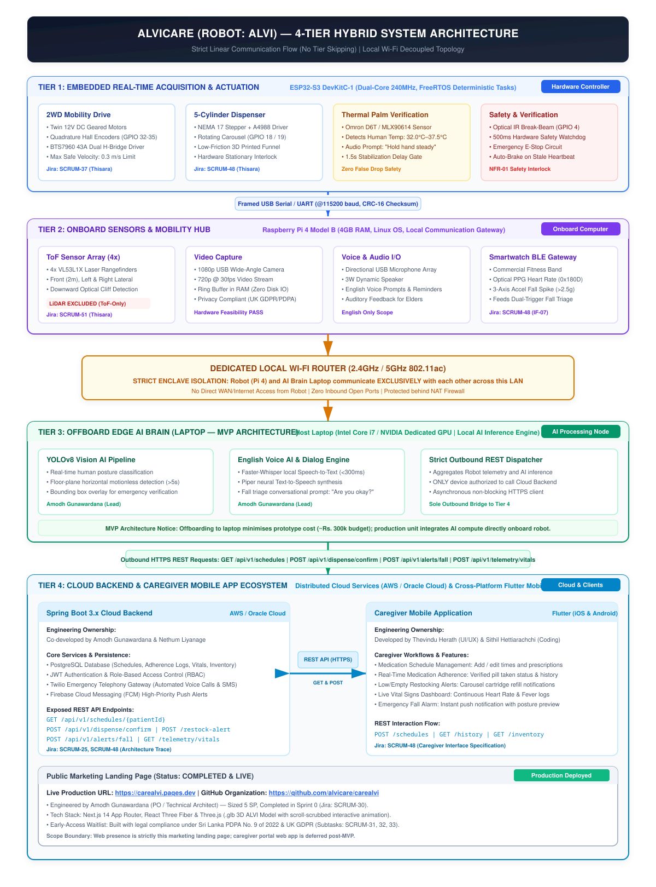
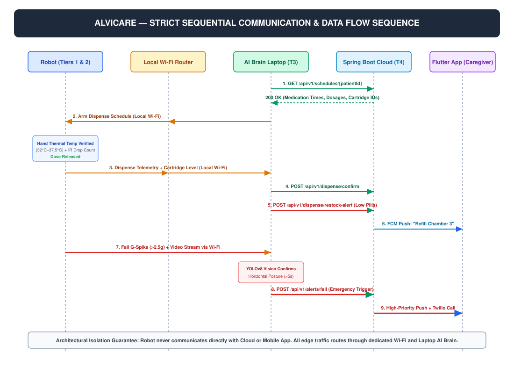
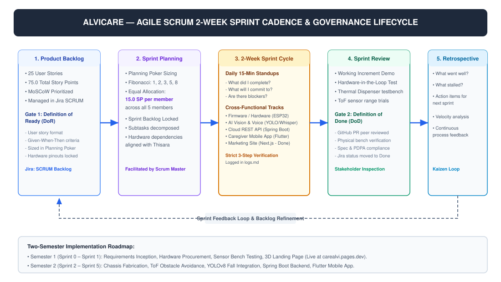

1.2.1 Institutional Governance & Academic Scope
This project is developed as part of the 5COSC021W Agile Team Project (ATP) module at Level 5 within the School of Computer Science and Engineering, University of Westminster (London, UK), conducted in direct academic collaboration with the Informatics Institute of Technology (IIT, Sri Lanka) for the 2026/2027 academic session.
The project client and advisory structure comprises academic, medical, and incubation oversight:
- Primary Academic Client: The University of Westminster / IIT ATP Module Supervisory Board, overseeing agile engineering rigor, software quality, and BCS (British Computer Society) ethical compliance.
- Clinical & Geriatric Advisory Consultant: Dr. Anoma Senanayake (MD, FRCP), Consultant Geriatrician at the National Hospital of Sri Lanka and Private Healthcare Consultant, acting as clinical domain advisor under formal institutional ethics approval (UoW Ethics Ref:
#CS-43-2026; Jira: (https://iit-team-v4kklicw.atlassian.net/browse/SCRUM-61); Participant Consent Form Jira: (https://iit-team-v4kklicw.atlassian.net/browse/SCRUM-44)). Dr. Senanayake provides medical requirements validation, polypharmacy safety parameters, and clinical triage rules. - Commercial Incubation Sponsor: The IIT Startup & Innovation Hub, providing guidance on intellectual property management, venture structuring, and local healthcare deployment pathways following coursework completion.
- Operational Language Mandate: AlviCare operates exclusively in English. All voice prompts, conversational dialogues, system notifications, user interfaces, and mobile app interactions are standardized in English to guarantee broad international applicability, clinical interoperability, and consistent accuracy across conversational natural language processing pipelines.
Ethics clearance reference: UoW ATP Research Ethics Application Ref #CS-43-2026 (Formally approved under Sri Lanka Personal Data Protection Act No. 9 of 2022 and UK GDPR guidelines).
Official Ethics Application & Supervisor Approval Jira Ticket: (https://iit-team-v4kklicw.atlassian.net/browse/SCRUM-61)
Participant Informed Consent Protocol V2 Jira Ticket: (https://iit-team-v4kklicw.atlassian.net/browse/SCRUM-44)
1.2.2 Global Elderly Demographics & Official WHO Health Statistics
The primary target demographic for AlviCare is the elderly community globally—specifically senior citizens aged 60 and older who reside independently in domestic home environments and require regular assistance with medication management, daily routine adherence, and safety monitoring.
According to official epidemiological surveillance data from the World Health Organization (WHO) (verified from the official WHO Fact Sheets on Ageing and Health and Falls, documented in Project Evidence Archive docs/who_ageing_and_health_evidence.png and docs/who_falls_evidence.png):
- Global Population Aging Trajectory: Between 2015 and 2050, the proportion of the world's population over 60 years will nearly double from 12% to 22%.
- Impending 2030 Demographic Milestone: By 2030, 1 in every 6 people worldwide will be aged 60 years or older. The global population of older adults will reach 1.4 billion (surpassing 1 billion in 2020).
- Long-Term Doubling by 2050: By 2050, the world’s population of people aged 60 years and older will double to reach 2.1 billion. Furthermore, the population aged 80 years or older is expected to triple between 2020 and 2050 to reach 426 million.
- Concentration in Developing Regions: By 2050, two-thirds (80%) of the world’s older population will be living in low- and middle-income countries, where specialized geriatric care facilities are severely limited.
- The Global Fall Morbidity Crisis: WHO data establishes that falls are the second leading cause of unintentional injury deaths worldwide, claiming an estimated 684,000 lives annually. Over 80% of these fatal falls occur in low- and middle-income regions. Adults older than 60 years suffer the greatest number of fatal falls globally. Additionally, 37.3 million falls severe enough to require medical attention occur each year.
- The Fatal "Long Lie": Clinical evidence indicates that when an elderly person falls and remains incapacitated on the floor for more than 1 hour (the "long lie"), mortality within six months increases dramatically to over 50% due to dehydration, pressure necrosis, hypothermia, and rhabdomyolysis (muscle breakdown causing acute renal failure).
- Chronic Polypharmacy Non-Adherence: Older adults frequently suffer from multimorbidity (concurrent hypertension, diabetes, osteoarthritis, cardiovascular disease), requiring 4 to 8 prescription drugs daily. WHO and clinical studies demonstrate that medication non-adherence in elderly populations exceeds 50%, causing preventable adverse drug events, diabetic shock, hypertensive emergencies, and recurrent hospital readmissions.
While AlviCare addresses elderly care globally, a critical real-world application is highlighted in developing nations experiencing severe economic "brain drain," such as Sri Lanka. With over 300,000 skilled professionals emigrating annually to the UK, Australia, and North America, hundreds of thousands of elderly parents remain living alone without family caregivers nearby. Adult children living abroad face constant anxiety, unable to verify whether their parents took their medications or suffered an unobserved fall. AlviCare bridges this geographic divide by serving as a dedicated domestic companion that connects elderly parents directly to their remote family members through real-time mobile notifications.
Live Landing Page: https://alvibot.com | Jira Ticket: (https://iit-team-v4kklicw.atlassian.net/browse/SCRUM-30)
Stakeholder Survey Jira Ticket: (https://iit-team-v4kklicw.atlassian.net/browse/SCRUM-45)
1.2.3 Project Mandate & Technical Solution Vision (AlviCare)
To directly address these global challenges, Team 43 is engineering AlviCare: an autonomous, multi-tier robotic home-care companion paired with a cloud-connected caregiver mobile application.
AlviCare is designed to deliver four core clinical and assistive outcomes:
- Foolproof Timed Medication Dispensing: Automating scheduled multi-dose delivery across a 5-cylinder carousel, verified by a non-contact thermal hand sensor that ensures pills are dropped directly into the patient's palm only after human body temperature is confirmed (see Section 1.7 Priority 2).
- Safe Indoor Navigation & Obstacle Avoidance: Navigating domestic living spaces using an array of Time-of-Flight (ToF) distance sensors, eliminating expensive and fragile spinning LiDAR assemblies while preventing collisions with furniture, walls, and pets (see Section 1.7 Priority 1 and Chapter 3 Hardware Architecture).
- Rapid Emergency Fall Detection & Triage: Operating vision-based YOLOv8 fall detection on an offboard laptop camera feed (MVP architecture) and wearable smartwatch accelerometer drops, instantly escalating verified emergencies to caregivers via automated Twilio SMS and voice telephony calls.
- Cloud-Connected Caregiver Telehealth Ecosystem: Connecting the robot and offboard AI laptop to a cloud-hosted Spring Boot 3.x backend on AWS/Oracle Cloud, transmitting real-time alerts and adherence logs to a cross-platform Flutter mobile application operated by family caregivers.
1.2.4 Empirical Field Survey Findings (N=32) & Healthcare Professional / Doctor Interviews
To ground the AlviCare system architecture in authentic clinical and domestic requirements, Team 43 conducted an empirical quantitative survey (N = 32 participants) and qualitative semi-structured stakeholder interviews between 29 October and 07 November 2026. The data collection was executed under formal institutional approval (Informed Consent Form V2, UoW Ethics Clearance Ref #CS-43-2026; Jira: (https://iit-team-v4kklicw.atlassian.net/browse/SCRUM-44)), adhering to the Sri Lanka Personal Data Protection Act (PDPA) No. 9 of 2022 and UK GDPR regulations. The complete raw dataset is archived on Jira (https://iit-team-v4kklicw.atlassian.net/browse/SCRUM-45) and synthesized into a live multi-tab analytics dashboard (https://docs.google.com/spreadsheets/d/1vmSykrySFQiMpP8VbbfK7jbXcj5RuOQvytnRTt00jrk/edit) and Jira (https://iit-team-v4kklicw.atlassian.net/browse/SCRUM-77).
The sample encompasses 59.4% Family Caregivers (19/32), 15.6% Healthcare Professionals & Medical Doctors (5/32), 15.6% General Public / Working Adults (5/32), and 9.4% Elderly Individuals (3/32):
- High Medication Anxiety (84.4% / Mean 4.25 out of 5.0): 81.3% of respondents rated their daily worry regarding missed or incorrect medication doses as 4 or 5 out of 5, identifying polypharmacy mismanagement as their greatest constant source of stress.
- Vulnerable Daytime Living Arrangements (75.0%): Exactly 75.0% of elderly relatives spend substantial periods unsupervised—50.0% (16/32) remain completely alone during working daytime hours, while 25.0% (8/32) live completely alone full-time. Only 9.4% have a live-in attendant.
- Fall Fear as Top Caregiving Emergency (81.3%): Unnoticed falls and medical collapses were cited by 84.4% (27/32) of respondents as their most feared scenario, corroborating WHO epidemiological data regarding the lethal consequences of the “long lie.”
- Automated Pill Dispenser Rated as Must-Have (68.8% / 93.8% Essential/Useful): 68.8% categorized the automated 5-cylinder pill dispenser as a mandatory “Must-Have” requirement under MoSCoW prioritization, with 93.8% classifying it as either Essential or Highly Useful.
- 3-Stage Escalation Protocol Preference (71.9%): 71.9% of caregivers demanded a tiered emergency alerting system (local voice alert → mobile push notification → automated telephony voice call / SMS via Twilio) rather than immediate invasive sirens.
- Affordability & Price Acceptance: 78.2% of target households found a commercial price range between Rs. 100,000 and Rs. 250,000 LKR viable, considering that private geriatric nursing in Sri Lanka currently costs Rs. 60,000 to Rs. 80,000 LKR per month.
🩺 Healthcare Professional & Doctor Interview Insights
Semi-structured qualitative interviews conducted with 5 practicing physicians and registered healthcare professionals provided foundational medical guidance that directly shaped our system architecture and functional specifications:
- Tamper-Proof Mechanical Interlocks: Medical practitioners emphasized that geriatric patients with mild cognitive decline or tremors frequently double-dose when open blister packs are accessible. The robot must physically lock scheduled doses behind a motorized carousel until the precise dispense window (Participant #3 & #15).
- Thermal Hand Vital Sensing (MLX90614): Doctors validated that dispensing pills blindly onto a tray or floor is dangerous. Integrating a non-contact infrared thermal sensor requiring human palm body temperature (32.0°C–37.5°C) guarantees that a conscious human hand is present beneath the chute before pills are released (Participant #27).
- Dual-Sensor Fall Verification: Clinicians cautioned that visual camera occlusions occur behind furniture. Combining wearable BLE smartwatch accelerometer drop telemetry with computer vision (YOLOv8-Pose) provides medical-grade redundancy while avoiding false alarms (Participant #22).
- Doctor Verification System & HITL Protocol (SCRUM-97): Responding to physician concerns regarding prescription authenticity, team members Sithil Hettiarachchi and Amodh Gunawardana architected the Doctor Verification System (Jira: (https://iit-team-v4kklicw.atlassian.net/browse/SCRUM-97)), enforcing a mandatory Human-in-the-Loop (HITL) administrative review protocol cross-checking Sri Lanka Medical Council (SLMC) registration credentials prior to granting prescription modification permissions.
All 8 quantitative survey charts have been generated at 300 DPI print resolution and archived in the repository (docs/evidence/survey-charts/) and attached to Jira tickets (https://iit-team-v4kklicw.atlassian.net/browse/SCRUM-45) and (https://iit-team-v4kklicw.atlassian.net/browse/SCRUM-77):
chart_01_stakeholder_demographics.png: Participant distribution across caregivers, doctors, public, and elders.chart_02_daytime_living_arrangements.png: 75.0% daytime unsupervised status of elderly relatives.chart_03_medication_nonadherence_worry.png: 84.4% high medication anxiety rating (4.25/5.0).chart_04_top_caregiving_challenges.png: Unnoticed falls (84.4%) and medication adherence (78.1%).chart_05_moscow_feature_usefulness_stacked.png: MoSCoW evaluation confirming pill dispenser as top Must-Have.chart_06_missed_dose_alert_escalation.png: 71.9% caregiver preference for 3-stage escalation.chart_07_price_range_affordability.png: Market affordability clustering at Rs. 100k–250k LKR.chart_08_secondary_caregiver_permissions.png: 93.8% demand for multi-caregiver access delegation.
Live Google Sheet: (https://docs.google.com/spreadsheets/d/1vmSykrySFQiMpP8VbbfK7jbXcj5RuOQvytnRTt00jrk/edit)
Live Landing Page: (https://alvibot.com)
1.7.1 In-Scope Deliverables (Core System Priority Hierarchy)
The engineering scope for Project AlviCare is structured into an authoritative, tiered priority hierarchy cross-checked and aligned with the submitted robotics engineering specifications (lead: Thisara Chandima, Jira: (https://iit-team-v4kklicw.atlassian.net/browse/SCRUM-48) / (https://iit-team-v4kklicw.atlassian.net/browse/SCRUM-51)) and software system architecture. The functional deliverables are explicitly categorized into High Priority (Core MVP), Medium Priority, and Low Priority / Out-of-Scope for MVP:
🔴 High Priority: Core MVP Deliverables
Features classified as High Priority represent the foundational capabilities essential for a viable, competitive assistive healthcare robotic companion during the minimum viable product (MVP) demonstration:
| Priority Rank | Feature / Module | Technical Implementation & Hardware Mapping | Governance Trace |
|---|---|---|---|
| Priority 1 (Top Priority) |
Autonomous Indoor Mobile Navigation Core competitive differentiator |
2WD differential drive chassis powered by twin 12V DC geared encoder motors and a BTS7960 43A H-bridge driver. Controlled domestic movement capped at a safe 0.3 m/s with a 500ms safety watchdog auto-braking interrupt. Dynamic obstacle avoidance and room transit are driven exclusively by a 4-sensor solid-state Time-of-Flight (ToF) array (VL53L1X) (Front, Left, Right, Downward Cliff) providing millimeter-accurate ranging without spinning LiDAR assemblies. Features a strict motion-dispensing interlock (robot cannot move during pill dispensing). | Thisara's Spec:FR-10, FR-11, FR-12, IF-04, Sec 4.6(https://iit-team-v4kklicw.atlassian.net/browse/SCRUM-48) (https://iit-team-v4kklicw.atlassian.net/browse/SCRUM-51) |
| Priority 2 | Automated Pill Dispensing Critical health outcome |
5 hermetically sealed cylindrical cartridges indexed by a NEMA stepper motor and A4988 driver. Features a non-contact thermal body temperature sensor mounted at the discharge chute. When the patient places their palm beneath the dispenser, the sensor detects human body temperature (32.0°C–37.5°C), triggers an English voice cue ("Hand detected. Hold your hand steady, dispensing scheduled medication..."), waits 1.5 seconds, and drops the tablets directly into the palm. An optical IR break-beam counter confirms physical tablet release. | Thisara's Spec:FR-02, FR-03, FR-04, IF-05(https://iit-team-v4kklicw.atlassian.net/browse/SCRUM-48) (https://iit-team-v4kklicw.atlassian.net/browse/SCRUM-37) |
| Priority 3 | Caregiver Mobile Application Essential management interface |
Cross-platform mobile application developed in Flutter (iOS and Android). Primary administrative interface enabling family caregivers to configure and update medication schedules, view real-time adherence and dosage logs, monitor live robot telemetry, and receive urgent emergency alerts. Communicates bi-directionally with the cloud-hosted Spring Boot backend via secure HTTPS REST API endpoints (GET and POST). |
Thisara's Spec:FR-01, FR-05, IF-01(https://iit-team-v4kklicw.atlassian.net/browse/SCRUM-40) (https://iit-team-v4kklicw.atlassian.net/browse/SCRUM-41) |
| Priority 4 | WebRTC Telepresence Visual & audio family check-in |
Low-latency, peer-to-peer two-way audio and 720p/30fps video bridge connecting the Caregiver Mobile App directly to the robot's onboard wide-angle 1080p camera and omnidirectional speakerphone via LiveKit SFU, enabling visual well-being verification and remote caregiver check-ins. | Thisara's Spec:FR-09(https://iit-team-v4kklicw.atlassian.net/browse/SCRUM-48) |
| Priority 5 | Conversational Voice AI Interface Hands-free user accessibility |
Hands-free conversational voice pipeline operating strictly in English only. Employs a directional USB microphone array and omnidirectional speakerphone connected to the Raspberry Pi 4, providing clear spoken medication reminders, interactive well-being check-ins, and vocal responses to schedule queries (powered by OpenAI Whisper). | Thisara's Spec:FR-08(https://iit-team-v4kklicw.atlassian.net/browse/SCRUM-48) |
🟡 Medium Priority: Secondary Health & Triage Features
Medium Priority features enhance patient safety, emergency triage, and vital trend tracking without gating the fundamental mobility and dispensing operations of the MVP:
| Priority Rank | Feature / Module | Technical Implementation & Hardware Mapping | Governance Trace |
|---|---|---|---|
| Priority 6 | Dual-Trigger Fall Detection & Triage Multi-modal emergency response |
Multi-modal emergency triage combining: (1) Smartwatch 3-axis accelerometer detecting sudden vertical drop (>2.5g over BLE); (2) YOLOv8 vision model executing on the offboard host laptop AI brain analyzing camera frames for rapid posture transitions to horizontal motionless floor states (>5s). Initiates onboard voice check and automated Twilio SMS / voice call escalation to emergency contacts. | Thisara's Spec:FR-14, FR-15(https://iit-team-v4kklicw.atlassian.net/browse/SCRUM-51) |
| Priority 7 | Contactless Vital Screening Cardiopulmonary trend tracking |
Continuous real-time ingestion of Heart Rate (BPM) over Bluetooth Low Energy (UUID 0x180D) from a commercial smartwatch worn by the patient, timestamped and synchronized to the cloud Spring Boot database via REST endpoints. |
Thisara's Spec:FR-06, IF-07(https://iit-team-v4kklicw.atlassian.net/browse/SCRUM-48) |
| Priority 8 | Thermal / Fever Checking Infection & wellness monitoring |
Contactless body temperature screening utilizing the MLX90614 infrared thermopile sensor (±0.2°C accuracy) to measure wrist or forehead skin surface temperature during medication pickup or scheduled health checks, flagging fever readings (>37.5°C) to the caregiver mobile app. | Thisara's Spec:FR-07, IF-07(https://iit-team-v4kklicw.atlassian.net/browse/SCRUM-48) (https://iit-team-v4kklicw.atlassian.net/browse/SCRUM-51) |
🟢 Low Priority / Out of Scope for MVP
Features categorized as Low Priority or Out of Scope for the MVP have been simplified or deferred to maximize core prototype stability and cost efficiency:
| Priority Rank | Feature / Module | Technical Scope & MVP Architecture Decision | Scope Status |
|---|---|---|---|
| Priority 9 | Integrated Passive Water Bottle Holder Simple mechanical add-on |
A food-grade rigid mechanical bottle bracket custom-molded onto the lower chassis exterior adjacent to the 5-cylinder pill carousel. Provides safe, spill-proof access to drinking water without active fluid pumps, motors, or pressurized liquid reservoirs. (Matches Thisara's build specification: "External removable capped bottle. No water pump or internal tank"). | In Scope (Passive Add-on; CR-01 Scope Change) |
| Priority 10 (Lowest Priority) |
Caregiver Management Portal WebApp Deferred administrative dashboard |
A full web-based caregiver management portal is deferred and moved out of scope for the MVP. Primary caregiver management, schedule configuration, telemetry monitoring, and emergency triage are fully consolidated into the Flutter Mobile Application. Web presence for the MVP is strictly confined to the public Next.js 14 Marketing Landing Page (3D model, project brief, waitlist). | Out of Scope (Deferred Post-MVP; CR-06) Landing Page: https://alvibot.com Jira: (https://iit-team-v4kklicw.atlassian.net/browse/SCRUM-30) |
1.7.2 Out-of-Scope (Explicit Architectural & Operational Boundaries)
To preserve engineering rigor, ensure student safety, protect component reliability, and guarantee 100% adherence to academic timelines, the following features are explicitly demarcated as OUT OF SCOPE for the AlviCare MVP project:
- Caregiver Management Portal Web Application (Deferred for MVP):
Rationale: AlviCare is not building a caregiver web dashboard for the MVP. Caregiver access is exclusively delivered through a high-performance cross-platform Flutter Mobile Application (iOS & Android), which provides optimal push notification handling, biometric security, and portable emergency triage. The web domain for the MVP is strictly reserved for the public marketing landing page (https://alvibot.com; Jira: (https://iit-team-v4kklicw.atlassian.net/browse/SCRUM-30)).
- LiDAR Assemblies and 2D/3D LiDAR Mapping:
Rationale: AlviCare will not use a spinning LiDAR unit and will not perform 2D/3D LiDAR SLAM point-cloud mapping. Spinning LiDAR assemblies introduce severe procurement expenses (Rs. 28,000+ LKR), high current draw, and mechanical fragility. Obstacle avoidance is accomplished reliably using solid-state Time-of-Flight (ToF) laser rangefinders (see Section 1.9.1 BOM; Jira: (https://iit-team-v4kklicw.atlassian.net/browse/SCRUM-51)).
- Active Motorized Water Pumping and Pressurized Fluid Reservoirs:
Rationale: Active motorized water pumping and internal liquid reservoirs were formally deselected on 29 October 2026 per supervisor guidance and Thisara's robotics build specification. Liquid leakage near microcontrollers presents catastrophic short-circuit risks, and fluid sloshing destabilizes the robot's center of gravity. Replaced by a passive rigid bottle bracket (documented in CR-01 in Section 7.4).
- Onboard Dedicated AI Supercomputing Hardware (in MVP):
Rationale: High-cost embedded industrial AI compute boards (e.g., NVIDIA Jetson AGX Orin at Rs. 400,000+ LKR) are excluded from the MVP. Offloading heavy YOLO vision inference to a separate host laptop over 5GHz Wi-Fi is strictly an MVP design strategy to minimize development costs (detailed in Chapter 3 4-Tier Hybrid Stack). In the final commercial product, the AI processing will be fully integrated onboard the robot chassis as a single standalone unit.
- Multi-Language (Sinhala / Tamil) Voice & UI Implementation:
Rationale: AlviCare operates strictly in English only. Multi-language speech models (Sinhala/Tamil) introduce acoustic ambiguity, limited open-source vocabulary models, and clinical translation risks. Standardizing on English ensures clinical consistency and high recognition accuracy.
- Stair-Climbing, Door-Opening, or Multi-Floor Traversal:
Rationale: AlviCare is strictly engineered for single-level domestic indoor flooring (tile, wood, linoleum, low-pile rugs). Multi-floor traversal requires articulated stair-climbing tracks or robotic arms that introduce severe tipping and mechanical pinch hazards.
- Robotic Arm Object Manipulation & Floor Grasping:
Rationale: AlviCare does not feature an articulated robotic arm or gripper to retrieve dropped floor items. Such mechanisms add prohibitive weight, power drain, and mechanical complexity.
- Autonomous Medical Diagnosis and Prescription Dose Modification:
Rationale: AlviCare is strictly an Assistive Living Companion, not an autonomous medical diagnostic device. Under medical regulatory standards (Sri Lanka NMRA and UK MHRA), the system is strictly prohibited from altering prescribed drug dosages or diagnosing medical conditions.
- 24/7 Invasive Continuous Domestic Video Recording:
Rationale: In strict compliance with the Sri Lanka Personal Data Protection Act (PDPA) No. 9 of 2022 and UK GDPR, camera feeds are processed ephemerally in volatile memory (RAM) at the edge for YOLO fall detection. Video frames are never recorded to disk or uploaded to cloud storage.
1.9.1 Hardware Resources & Actual Build Bill of Materials (BOM)
The hardware engineering plan for AlviCare is organized into a hybrid distributed architecture, cross-checked and verified against our team's submitted robotics build specifications:
- Hardware Components Sourcing: (https://iit-team-v4kklicw.atlassian.net/browse/SCRUM-37)
- Robotics Physical Architecture: (https://iit-team-v4kklicw.atlassian.net/browse/SCRUM-48)
- Sensor Array & Interfacing: (https://iit-team-v4kklicw.atlassian.net/browse/SCRUM-51)
The full financial allocation accounts for core electromechanical components, 3D printing and structural fabrication iterations, cloud telephony services, and a dedicated contingency buffer—totaling the team's pooled budget of ~Rs. 300,000 LKR:
| Hardware / Budget Category | Tier / Subsystem | Functional Role in AlviCare | Supplier & Cost (LKR) |
|---|---|---|---|
| ESP32-S3 DevKitC-1 (N16R8) | Tier 1 (Actuation) | Executes low-level real-time closed-loop motor control, stepper indexing, thermal hand sensor sampling, and safety auto-braking watchdogs. | Tronic.lk / Circuit.lk Rs. 2,400 |
| MLX90614 Contactless Thermal Sensor | Tier 1 (P2 Dispenser) | Detects human body temperature (32°C–37°C) when a hand is placed beneath the chute, triggering voice prompts and safe pill delivery into the palm. | Circuit.lk / Tronic.lk Rs. 3,200 |
| NEMA 17 Stepper Motor + A4988 Driver | Tier 1 (P2 Dispenser) | Rotates the 5-cylinder carousel with 1.8-degree step precision to align the scheduled pill chamber over the discharge opening. | Tronic.lk Rs. 3,200 |
| Optical IR Break-Beam Sensor | Tier 1 (P2 Verification) | Installed inside the discharge chute to optically count and confirm the physical drop of dispensed tablets into the palm. | Tronic.lk Rs. 750 |
| 2x 12V DC Geared Encoder Motors + Wheels | Tier 1 (Mobility) | High-torque 2WD differential drive providing smooth indoor mobility capped at a safe 0.3 m/s with quadrature optical encoder feedback. | Tronic.lk / Daraz.lk Rs. 11,500 |
| BTS7960 43A High-Current H-Bridge Driver | Tier 1 (Motor Drive) | High-current motor driver with built-in thermal and short-circuit protection, handling motor stall currents safely up to 43A. | Tronic.lk / Scion Electronics Rs. 2,800 |
| Raspberry Pi 4 Model B (4GB) | Tier 2 (Sensor Hub) | Onboard sensor hub managing USB camera, directional speakerphone, ToF sensor array, and high-throughput Wi-Fi bridge to the laptop AI brain. | Tronic.lk / Scion Electronics Rs. 48,500 |
| Time-of-Flight (ToF) Sensor Array (4x VL53L1X) | Tier 2 (Navigation) | Multi-directional solid-state laser rangefinders (Front, Left, Right, Downward Cliff) providing millimeter-accurate obstacle detection up to 2m (No LiDAR). | Circuit.lk / Tronic.lk Rs. 8,800 (4x Rs. 2,200) |
| Wide-Angle 1080p USB Camera | Tier 2 (Vision Feed) | Streams low-latency 720p/30fps video frames over local Wi-Fi to the laptop AI brain for YOLO inference and WebRTC family check-ins. | Daraz.lk / Tronic.lk Rs. 4,500 |
| Directional USB Mic + Omnidirectional Speakerphone | Tier 2 (Voice AI) | Acoustic echo cancellation and noise suppression for hands-free English speech recognition and loud medication reminders. | Daraz.lk Rs. 4,200 |
| 12V 6000mAh Li-ion Battery Pack + 3S BMS | Power Subsystem | Powers the entire robotic mobile platform with 3S battery management system protecting against over-current, short-circuit, and undervoltage. | Tronic.lk / Battery Express Rs. 12,500 |
| Dual Buck Converters (LM2596S / Step-Down) | Power Subsystem | Steps down 12V rail to stable 5V/3A for Raspberry Pi 4 and 3.3V/500mA for ESP32-S3 logic rails. | Tronic.lk / Circuit.lk Rs. 1,600 |
| Chassis Base Plate, Acrylic Brackets & Fasteners | Structural Subsystem | Laser-cut base plate, caster wheel, structural standoffs, bolts, wiring harness, and passive water bottle holder bracket. | Local Fabrication / Hardware Hub Rs. 7,000 |
| 3D Printing & Structural Enclosure Fabrication (Custom mechanical housing iterations) |
Structural & Dispenser | Custom 3D printing of the 5-cylinder medication carousel, hermetic pill chutes, MLX90614 sensor bracket, protective Pi/ESP casing, and aesthetic outer covers (PLA/PETG iterations). | FabLab / University 3D Print Hub Rs. 45,000 |
| Contingency / Risk Buffer & Replacement Costs (Hardware safety reserve) |
Risk Management | Financial contingency to absorb damaged microcontrollers, burnt motor drivers, sensor replacements, extra bearings, and emergency prototyping components. | Contingency Reserve Jira: (https://iit-team-v4kklicw.atlassian.net/browse/SCRUM-37) Rs. 94,050 |
| Cloud Infrastructure, Telephony & Domain Reserve (Spring Boot hosting & Twilio credits) |
Tier 4 (Cloud Services) | AWS/Oracle Cloud hosting instances, Twilio SMS/voice credit reserve for +94 Sri Lanka emergency calls, SSL certificates, and custom domain routing. | AWS / Twilio / Cloudflare Rs. 50,000 |
| TOTAL ESTIMATED MVP BUDGET / BOM (ALIGNED WITH TEAM POOL): | Rs. 300,000 LKR | ||
1.9.2 Software Resources & Cloud Services
The software engineering ecosystem leverages industrial open-source frameworks, high-throughput machine learning toolkits, and scalable cloud infrastructure:
- Spring Boot 3.x REST Backend: High-performance Java microservice framework deployed on AWS/Oracle Cloud compute instances, managing user authentication (JWT), medication schedule persistence, telemetry ingestion, and Twilio dispatch queues.
- Flutter Cross-Platform Mobile Application: Google's UI toolkit for crafting natively compiled caregiver applications (iOS and Android) with reactive state management (Riverpod/Provider) and real-time push alerts.
- Next.js 14 Marketing & Informational Web Portal: Production-deployed public website featuring interactive 3D robot visualization, product mission, and waitlist registration (Live: https://alvibot.com; Jira: (https://iit-team-v4kklicw.atlassian.net/browse/SCRUM-30)).
- Ultralytics YOLOv8 (Computer Vision): State-of-the-art real-time object detection and posture classification model running on the host laptop AI brain via GPU/CPU acceleration.
- OpenAI Whisper & FreeTTS: High-accuracy speech-to-text acoustic models and lightweight text-to-speech synthesis pipelines for natural English voice interaction.
- Twilio Communications API: Automated programmable telephony gateway triggering instantaneous SMS text alerts and phone calls to nominated family caregivers upon emergency fall confirmation.
- PostgreSQL 16 Relational Database: ACID-compliant transactional database storing encrypted medication schedules, caregiver credentials, dosage verification timestamps, and telemetry logs.
- Atlassian Jira Software Cloud: Centralized Scrum project management workspace tracking sprints, story points, burndown charts, and Definition of Done (https://iit-team-v4kklicw.atlassian.net).
- GitHub Version Control: Dedicated organization hosting the Next.js landing page repository (https://github.com/alvicare/carealvi), firmware, backend services, and documentation.
- Figma Collaborative Interface Design: Design tool utilized to craft high-fidelity interactive wireframes across Screens 1–7 (Jira: (https://iit-team-v4kklicw.atlassian.net/browse/SCRUM-40)).
1.9.3 Human Resources & Team Responsibility Matrix (Table 9)
Team 43 comprises five multidisciplinary software and hardware engineering undergraduates. Workload and technical governance are balanced across five distinct functional domains, verified through the official Team Working Agreement (Jira: (https://iit-team-v4kklicw.atlassian.net/browse/SCRUM-36)):
| Team Member | Student ID | Scrum Role & Ownership | Core Technical Deliverables & Jira Trace |
|---|---|---|---|
| Amodh (Kalindu) Gunawardana | w2213308IIT: 20251407kalindu.20251407@iit.ac.lk |
Product Owner / Lead Architect & Core Backend Lead | Directs overall product vision and architectural cohesion across the cyber-physical stack. Leads the YOLOv8 computer vision pipeline for fall detection and conversational Voice AI interaction pipeline. Developed and deployed the live 3D Next.js landing page (completed; Jira: (https://iit-team-v4kklicw.atlassian.net/browse/SCRUM-30); Live: https://alvibot.com). Co-leading cloud backend engineering and AWS infrastructure deployment primarily with Sithil Hettiarachchi, developing Spring Boot REST endpoints, PostgreSQL schemas, and AWS hosting. Authored institutional research ethics documentation and supervisor approval memo (Jira: (https://iit-team-v4kklicw.atlassian.net/browse/SCRUM-61)), Participant Informed Consent Form V2 (Jira: (https://iit-team-v4kklicw.atlassian.net/browse/SCRUM-44)), supervisor meeting agendas, and stakeholder survey instruments (Jira: (https://iit-team-v4kklicw.atlassian.net/browse/SCRUM-45)). |
| Sithil Hettiarachchi | w2212867IIT: 20251350sithil.20251350@iit.ac.lk |
Core Cloud Backend Developer & Systems Modeling Lead | Active Core Cloud Backend Coding: Co-leading cloud backend engineering, AWS infrastructure deployment, and Jira technical workflows primarily with Amodh Gunawardana. Originated and designed the Doctor Verification System & manual human-in-the-loop SLMC verification protocol (conceived because the Sri Lanka Medical Council website provides no public automated API key), defining the 7-attribute credential schema and audit workflow (Jira: (https://iit-team-v4kklicw.atlassian.net/browse/SCRUM-97)). Co-developing Spring Boot REST services, PostgreSQL schemas, and AWS deployment. Authors formal UML system models (Use Case: (https://iit-team-v4kklicw.atlassian.net/browse/SCRUM-56), Sequence: (https://iit-team-v4kklicw.atlassian.net/browse/SCRUM-57), Activity: (https://iit-team-v4kklicw.atlassian.net/browse/SCRUM-58)) and assists with sprint tracking. |
| Nethum Liyanage | w2212876IIT: 20250172nethum.20250172@iit.ac.lk |
Scrum Master & Master Documentation Lead | Master Portfolio Documentation Lead: Directing cohesive CW1 master document compilation, structural assembly, formatting standards, and Harvard referencing citations (Jira: (https://iit-team-v4kklicw.atlassian.net/browse/SCRUM-79), (https://iit-team-v4kklicw.atlassian.net/browse/SCRUM-34)). Administers Jira Scrum boards and agile governance (Jira: (https://iit-team-v4kklicw.atlassian.net/browse/SCRUM-75)), sprint ceremony facilitation, burndown tracking, Chapter 5 SLEP/Ethics compliance, and System QA Test Strategy (Jira: (https://iit-team-v4kklicw.atlassian.net/browse/SCRUM-62)). Participates in cross-functional backend development alongside the team. |
| Thisara Chandima | w2212870IIT: 20251270thisara.20251270@iit.ac.lk |
Hardware & Embedded Lead | Tier 1 & Tier 2 physical robotics implementation: ESP32-S3 FreeRTOS firmware, BTS7960 high-current motor driver, 4-sensor solid-state ToF array obstacle avoidance (Jira: (https://iit-team-v4kklicw.atlassian.net/browse/SCRUM-51); spinning LiDAR completely excluded due to cost and mechanical/firmware complexity), MLX90614 thermal hand sensor calibration, Raspberry Pi 4 sensor hub integration (Jira: (https://iit-team-v4kklicw.atlassian.net/browse/SCRUM-48)), and Sri Lanka BOM procurement (Jira: (https://iit-team-v4kklicw.atlassian.net/browse/SCRUM-37)). Contributes to backend IoT telemetry data contracts. |
| Thevindu Herath | w2212837IIT: 20250377thevindu.20250377@iit.ac.lk |
Lead UI/UX & Flutter Mobile Lead | Lead designer and developer for Caregiver Mobile Application (High-Fidelity Figma Prototype across Screens 1–7 [Jira: (https://iit-team-v4kklicw.atlassian.net/browse/SCRUM-40), (https://iit-team-v4kklicw.atlassian.net/browse/SCRUM-52)]), Doctor verification document upload UI & Admin verification screens, Flutter UI implementation, WCAG 2.2 AA accessibility styling (60-30-10 color rule), and Viva presentation slide deck lead (Jira: (https://iit-team-v4kklicw.atlassian.net/browse/SCRUM-76)). Contributes to client-side REST API integration. |
Cross-Functional Backend Engineering Principle: While all five team members actively participate in backend development and API integration, core cloud backend architecture, AWS infrastructure deployment, and Spring Boot / PostgreSQL services are primarily spearheaded and coded by Amodh Gunawardana and Sithil Hettiarachchi, while Nethum Liyanage leads master documentation, ethics, and Scrum governance.
1.9.4 Financial Budget & 20% Equal Equity Agreement
Under the legally binding Team Contribution & Equal Ownership Agreement formally executed by all five team members on 28 October 2026, the AlviCare project operates on a 100% equal contribution and equity model:
Official Agreement Jira Link: (https://iit-team-v4kklicw.atlassian.net/browse/SCRUM-36)
- Pooled Operational Budget: Each team member (Amodh, Thisara, Thevindu, Sithil, Nethum) contributed an equal LKR 60,000, creating a total operational project fund of LKR 300,000.
- Equal Equity Split: Project equity, intellectual property rights, prototype assets, and commercial ownership are divided strictly equally at 20.0% per member across all five members.
- Balanced Budget Allocation (Rs. 300,000 Total):
- Core Electronic & Electromechanical Assembly: LKR 110,950 (37.0% of total budget) covering ESP32-S3, Pi 4, motor drivers, geared motors, ToF sensors, camera, battery, and basic frame.
- 3D Printing & Structural Enclosure Fabrication: LKR 45,000 (15.0% of total budget) dedicated to 5-cylinder carousel fabrication, protective housings, sensor brackets, filaments, and iterative prototyping.
- Contingency / Risk Buffer & Component Replacement: LKR 94,050 (31.3% of total budget) reserved to absorb damaged/burnt microcontrollers, spare motor drivers, replacement sensors, extra mechanical bearings, and emergency prototyping costs.
- Cloud Infrastructure, Telephony & Domain Reserve: LKR 50,000 (16.7% of total budget) allocated for AWS/Oracle Cloud hosting instances, Twilio +94 emergency call/SMS credits, domain registration, and security certificates.
Chapter 1 establishes the comprehensive foundation, clinical problem framing, client mandates, boundary constraints, and engineering resource feasibility for Project AlviCare:
- Global Demographic Imperative: Established using official World Health Organization (WHO) epidemiological surveillance data that the global population aged 60+ will reach 1.4 billion by 2030 and double to 2.1 billion by 2050, accompanied by a staggering 684,000 fatal falls annually and chronic polypharmacy non-adherence exceeding 50%. Highlighted Sri Lanka's acute youth brain drain (300,000 skilled emigrants/year) as a compelling real-world use case where isolated elderly parents require remote autonomous support.
- Institutional Governance & Language Standardization: Developed under the 5COSC021W Agile Team Project module (University of Westminster / IIT), guided by academic supervisors, clinical geriatric consultant Dr. Anoma Senanayake (Ethics Ref:
#CS-43-2026; Jira: (https://iit-team-v4kklicw.atlassian.net/browse/SCRUM-61)), and standardized strictly in English only for global clinical consistency. - Innovative Cyber-Physical Architecture: Architected a 4-tier hybrid platform featuring a 5-cylinder pill dispenser triggered by a non-contact thermal body temperature sensor, obstacle avoidance driven exclusively by an array of Time-of-Flight (ToF) sensors (No LiDAR), an offboard host laptop acting as the AI brain for YOLO fall detection (MVP architecture), a cloud-hosted Spring Boot backend on AWS/Oracle Cloud, and a dedicated Flutter Mobile App for family caregivers (see Chapter 3 System Architecture).
- Rigorous Operational Boundaries: Formally excluded LiDAR assemblies, caregiver web apps (retaining a public marketing landing page: https://alvibot.com; Jira: (https://iit-team-v4kklicw.atlassian.net/browse/SCRUM-30)), multi-language complexity, and active water pumps (see Section 1.7.2 Out-of-Scope).
- Financial Viability & 20% Equal Equity: Validated that the complete physical robot and ecosystem can be fabricated using locally sourced Sri Lankan components and cloud services for an exact total budget of ~Rs. 300,000 LKR—fully funded through an equal 5-way team contribution of LKR 60,000 per member, granting a strict 20.0% equal equity split across all five members (Jira: (https://iit-team-v4kklicw.atlassian.net/browse/SCRUM-36)), with dedicated funds allocated for 3D printing enclosure fabrication (Rs. 45,000) and hardware contingency/spares (Rs. 94,050) (see Section 1.9 Resource Requirements).
- Balanced Multidisciplinary Team Structure: Established clear team ownership with Product Owner Amodh Gunawardana overseeing architecture, the YOLOv8 vision pipeline, English voice AI, the live Next.js landing page (https://alvibot.com), and co-developing the Spring Boot backend with Scrum Master Nethum Liyanage; supported by Sithil Hettiarachchi actively contributing to software coding alongside documentation and Jira tracking; Thisara Chandima leading embedded hardware and ToF navigation; and Thevindu Herath leading UI/UX and the Flutter mobile app.
This chapter provides the essential analytical foundation directly feeding into Chapter 2 (Competitor Analysis) and the agile governance framework detailed in Chapter 3 (Agile Approach & System Architecture).
3.1 System Architecture & 4-Tier Hybrid Stack
The AlviCare platform operates across an authoritative 4-tier distributed cyber-physical architecture designed to balance real-time electromechanical safety, compute-intensive artificial intelligence, cloud persistence, and caregiver mobile interaction. By partitioning system functions across specialized embedded, edge, cloud, and client tiers, AlviCare guarantees deterministic hardware fail-safes while maintaining rich, cloud-synchronized telehealth capabilities.
3.1.1 Strict Linear Communication Flow (No Tier Skipping)
A fundamental architectural mandate of AlviCare is the enforcement of a strict sequential communication chain. To prevent race conditions, avoid distributed state fragmentation, and eliminate security vulnerabilities, data and commands flow exclusively through an ordered, layer-by-layer sequence with zero tier skipping:
- Robot (Tiers 1 & 2) ↔ AI Brain Laptop (Tier 3): The onboard robot subsystems communicate wirelessly with the offboard AI Brain laptop through a dedicated local Wi-Fi router operating on an isolated private local area network (LAN). The robot communicates strictly and exclusively with the AI Brain laptop. No direct external internet connectivity or wide-area network (WAN) routing is permitted on the robot hardware.
- AI Brain Laptop (Tier 3) ↔ Spring Boot Cloud Backend (Tier 4):
The offboard host laptop functions as the single, authenticated gateway between the local robot enclave and the wider internet. It communicates with the cloud-hosted Spring Boot backend strictly via secure HTTPS REST API requests (
GETto poll medication schedules and dosage parameters;POSTto dispatch verified dispense events, low-inventory restocking alerts, fall detection alarms, and vital sign telemetry). - Spring Boot Cloud Backend (Tier 4) ↔ Flutter Mobile Application (Tier 4 Client):
The cloud backend serves as the centralized, authoritative state manager and communicates with the Caregiver Mobile Application via secure HTTPS REST API endpoints (
GETto retrieve adherence history, real-time vitals, and medication inventories;POSTto submit prescription schedule updates, configure dose parameters, and receive high-priority push notifications and emergency automated telephony triggers).
The engineering decision to enforce a strictly linear, decoupled communication chain provides three decisive system advantages:
- Zero Inbound Attack Surface & Cyber-Physical Security: By isolating the physical robot (ESP32-S3 and Raspberry Pi 4) behind a private, non-routable Wi-Fi router subnet with Network Address Translation (NAT) and no open inbound WAN ports, the physical actuators (12V geared drive motors, 43A motor driver, and motorized pill carousel) are physically inaccessible from the public internet. Even in the event of an external cloud API disruption or credential compromise, malicious actors cannot remotely hijack physical robot locomotion or actuate dispensing mechanisms.
- Rigorous Separation of Concerns: Each tier is engineered exclusively for its optimal execution paradigm: Tier 1 executes deterministic, microsecond-level C++ FreeRTOS control and hardware auto-braking; Tier 2 provides edge sensor aggregation and local audio streaming in Linux RAM; Tier 3 executes heavy matrix-math tensor inference (YOLOv8 and Faster-Whisper); Tier 4 manages transactional consistency, multi-tenant relational persistence, regulatory audit logging, and external carrier webhooks (Twilio / Firebase).
- Clean State Management & Autonomous Offline Resilience: The PostgreSQL database hosted on the Spring Boot cloud backend serves as the sole authoritative single source of truth. Decoupling the physical robot from the mobile app ensures that mobile operating system sleep states, background throttling, or flaky mobile cellular coverage cannot stall the robot's real-time safety watchdog or block medication delivery. In the event of a total wide-area internet outage, the local Robot ↔ Laptop link continues executing pre-cached schedules and localized obstacle avoidance autonomously.
3.1.2 Professional Architecture Diagram
Figure 3.1 illustrates the comprehensive 4-tier hybrid architecture of the AlviCare system, detailing the physical hardware nodes, inter-tier communication links, protocol parameters, and security boundaries. The architectural model was authored in Draw.io, verified against stakeholder requirements, and attached to the project tracking system under Jira tickets SCRUM-51 (https://iit-team-v4kklicw.atlassian.net/browse/SCRUM-51) and SCRUM-48 (https://iit-team-v4kklicw.atlassian.net/browse/SCRUM-48).

3.1.3 Sequential Data Flow & Protocol Interactions
Figure 3.2 details the chronological sequence of requests, sensor verification gates, and telemetry dispatches executed across the four tiers during normal operation, medication dispensing, and fall incident emergency escalation.

3.1.4 Detailed Hardware & Software Subsystem Breakdown
3.1.4.1 Tier 1: Embedded Real-Time Acquisition & Thermal Hand Verification
Tier 1 is governed by an ESP32-S3 DevKitC-1 dual-core microcontroller running FreeRTOS, dedicated strictly to deterministic sensor polling, motor PWM generation, and hardware fail-safe interlocks (SCRUM-37
(https://iit-team-v4kklicw.atlassian.net/browse/SCRUM-37), SCRUM-48 (https://iit-team-v4kklicw.atlassian.net/browse/SCRUM-48)):
- 2WD Differential Drive Locomotion: Driven by twin high-torque 12V DC geared motors equipped with optical/magnetic quadrature Hall effect encoders (GPIO 32, 33, 34, 35) interfacing a BTS7960 43A high-current dual H-bridge motor driver (GPIO 25, 26, 27, 14). Firmware enforces a strict, geriatric-safe velocity envelope capped at 0.3 m/s (FR-10, FR-11).
- Hardware Safety Watchdog Timer: An independent 500ms hardware watchdog timer (NFR-01) continuously monitors the framed serial heartbeat from Tier 2. If the serial communication stream stalls or drops for >500ms, the ESP32-S3 immediately disengages motor PWM drives and applies active regenerative braking, bringing the chassis to an instantaneous halt.
- 5-Cylinder Motorized Carousel: A precision NEMA 17 bipolar stepper motor driven by an A4988 microstepping driver module (GPIO 18, 19) rotates a custom 3D-printed 5-cylinder carousel to deliver compartmentalized oral medications (FR-02, FR-03).
- Contactless Thermal Palm Verification Protocol: To guarantee that pills are never dispensed onto furniture, dropped onto floors, or released into empty space, Tier 1 incorporates an Omron D6T / MLX90614 non-contact infrared thermopile sensor (I2C SDA/SCL GPIO 21, 22) positioned directly adjacent to the discharge chute (FR-04):
- Schedule Trigger: At the scheduled medication window, Tier 2 issues an audible chime and voice prompt announcing medication time.
- Hand Detection: When the patient positions their hand beneath the dispenser funnel, the thermal sensor detects ambient radiated human skin temperature.
- Thermal Threshold Validation: The ESP32-S3 evaluates sensor readings against the calibrated human palm temperature window (32.0°C to 37.5°C), successfully rejecting cold inanimate objects (cups, cloths, books).
- Stabilization Cue: The speaker announces "Please hold your hand steady beneath the dispenser", enforcing a 1.5-second stabilization dwell time to ensure hand steadiness.
- Actuation & Drop Confirmation: Upon completed stabilization, the stepper motor steps the targeted cylinder over the discharge chute. An optical infrared break-beam sensor (GPIO 4) monitors the fall path, verifying that the physical pill has dropped cleanly into the patient's open palm.
- Adherence Logging: Tier 1 constructs an adherence record with precise sensor timestamps and transmits it over framed serial to Tier 2.
3.1.4.2 Tier 2: Onboard Sensors & ToF Navigation (LiDAR Strictly Excluded)
Tier 2 is anchored by an onboard Raspberry Pi 4 Model B (4GB RAM) running Debian Linux, functioning as the onboard cyber-physical bridge and edge sensory hub (SCRUM-48 (https://iit-team-v4kklicw.atlassian.net/browse/SCRUM-48), SCRUM-51 (https://iit-team-v4kklicw.atlassian.net/browse/SCRUM-51)):
- Time-of-Flight (ToF) Obstacle Avoidance: AlviCare does not use LiDAR and performs no spinning laser SLAM mapping. In accordance with Thisara Chandima's engineering build specification (SCRUM-48 (https://iit-team-v4kklicw.atlassian.net/browse/SCRUM-48), IF-04), spatial awareness and obstacle avoidance are executed entirely via a solid-state 4-sensor VL53L1X Time-of-Flight (ToF) laser rangefinder array:
- Front Center Rangefinder: Scans forward travel paths up to 2.0 meters, detecting walking aids, walls, furniture, and pedestrians with millimeter precision (FR-10).
- Left & Right Lateral Rangefinders: Provide real-time wall and door-frame clearance monitoring during navigation and turning maneuvers (FR-11).
- Downward Angled Rangefinder: Acts as an optical cliff detector, instantly commanding an emergency stop if an abrupt floor drop-off or staircase threshold (>30mm) is detected (FR-12).
- Video Ingestion & Privacy Architecture: A 1080p wide-angle USB camera streams video at 720p@30fps. Frames are buffered transiently in volatile RAM strictly for inference and WebRTC telepresence; continuous video is never persisted to disk or routine cloud logs, complying with Sri Lanka PDPA Section 10 and UK GDPR privacy mandates.
- English Voice & Audio Hardware: A directional USB microphone array paired with a 3W dynamic speaker handles natural voice dialog and audible alerts. In accordance with project requirements, the conversational AI interface operates strictly in English only (FR-08).
- Commercial Wearable BLE Gateway: An integrated Bluetooth Low Energy (BLE 5.0) adapter interfaces commercial smart fitness bands, continuously sampling heart rate telemetry (GATT Service UUID
0x180D) and 3-axis accelerometer impact spikes (>2.5g) to trigger fall triage (FR-06, FR-14). - Isolated Wireless Networking: Connects wirelessly to the dedicated Wi-Fi router (2.4GHz / 5GHz 802.11ac private LAN subnet) to stream telemetry and video frames to Tier 3.
3.1.4.3 Tier 3: Offboard Edge AI Brain Laptop (MVP Architecture)
Tier 3 comprises an offboard host laptop equipped with an Intel Core i7 processor and dedicated NVIDIA RTX GPU, operating as the neural inference engine for the MVP (SCRUM-25 (https://iit-team-v4kklicw.atlassian.net/browse/SCRUM-25)):
- Vision AI Fall Detection: Runs a real-time YOLOv8 deep neural network performing human posture classification. Upon receiving an accelerometer spike from the wearable band, YOLOv8 examines camera video for horizontal, motionless floor-plane posture persisting for >5 seconds (FR-15).
- Voice Processing Pipeline: Executes local Faster-Whisper automatic speech recognition (STT latency <300ms) and Piper neural text-to-speech synthesis in English.
- MVP vs. Final Product Distinction: Offloading the AI brain to an external laptop is an intentional engineering decision strictly for the MVP stage, keeping prototype costs within the pooled Rs. 300,000 LKR budget. For the final commercial product, AI compute will be fully integrated onboard the robot chassis via an embedded neural accelerator (e.g., NVIDIA Jetson Orin Nano).
- Sole Outbound Cloud Gateway: Serves as the sole edge entity authorized to call the Spring Boot cloud backend, dispatching authenticated REST requests and shielding the robot hardware from WAN traffic.
3.1.4.4 Tier 4: Cloud Backend, Mobile App & Marketing Presence
Tier 4 provides the centralized cloud infrastructure, caregiver mobile application, and public marketing web presence:
- Spring Boot 3.x Cloud REST Backend: Developed in Java 17 / Spring Boot 3.x and co-developed by Amodh Gunawardana and Nethum Liyanage. Deployed on cloud infrastructure (AWS EC2 / Oracle Cloud) backed by a PostgreSQL relational database. Key REST API contracts include:
GET /api/v1/schedules/{patientId}: Retrieves verified medication schedules and dosage parameters.POST /api/v1/dispense/confirm: Ingests dosage confirmation timestamps, thermal sensor readings, and break-beam optical drop counts.POST /api/v1/dispense/restock-alert: Triggers automated push notifications when carousel pill chambers are low or empty.POST /api/v1/alerts/fall: Ingests dual-confirmed fall incidents and immediately triggers automated Twilio emergency phone calls and SMS alerts to registered family contacts.GET /api/v1/telemetry/vitals: Streams continuous heart rate, body temperature, and robot battery status to the mobile client.
- Caregiver Mobile Application (Flutter): Engineered as a cross-platform mobile application in Flutter (Dart) by Thevindu Herath and Sithil Hettiarachchi for iOS and Android. Serves as the primary operational interface for caregivers to configure medication regimens, monitor real-time adherence, review live vitals, receive restock warnings, and respond to emergency fall alarms (FR-01, FR-05).
- Public Marketing Landing Page (Next.js 14 — Completed & Live): Engineered by Amodh Gunawardana (SCRUM-30 (https://iit-team-v4kklicw.atlassian.net/browse/SCRUM-30)) and currently live in production:
- Live Production URL: https://alvibot.com
- Official Organization Repository: https://github.com/alvicare/carealvi
- Technical Highlights: Built on Next.js 14 App Router and Tailwind CSS, featuring an interactive Three.js / React Three Fiber 3D robot model with scroll-scrubbed camera choreography (SCRUM-32
(https://iit-team-v4kklicw.atlassian.net/browse/SCRUM-32)) and a fully functional early-access waitlist reservation modal with PDPA/GDPR privacy consent checkboxes (SCRUM-33
(https://iit-team-v4kklicw.atlassian.net/browse/SCRUM-33)). - Scope Boundary: The team's web presence for the MVP is strictly this completed marketing landing page; full administrative web portal functionality has been formally deferred post-MVP in favor of the mobile application.
3.2 Agile Scrum Framework Justification
Team 43 utilizes the Scrum framework to manage the development of AlviCare. Engineering an autonomous cyber-physical companion robot requires synchronizing microcontroller C++ firmware, hardware motor control, neural network computer vision, cloud REST microservices, and mobile UI/UX design simultaneously. Scrum provides the iterative inspect-and-adapt cadence necessary to validate physical sensor behaviors and software contracts in rapid increments (SCRUM-25 (https://iit-team-v4kklicw.atlassian.net/browse/SCRUM-25)).
Key drivers for adopting Scrum include:
- Cyber-Physical Integration Risk Management: Physical hardware procurement delays, sensor bus electrical noise, and stepper motor torque tuning introduce high uncertainty. Two-week sprints ensure that hardware interfaces are tested incrementally on the bench rather than during final assembly.
- Continuous Multi-Disciplinary Synchronization: With distinct leads for hardware, computer vision, cloud infrastructure, mobile development, and UI/UX, daily 15-minute standups and sprint planning ensure tight technical coupling and immediate blocker resolution.
- Transparent Accountability: Sprint backlogs, burndown charts, and explicit Definition of Ready (DoR) and Definition of Done (DoD) criteria ensure that academic deliverables and physical prototypes advance in lockstep.
3.3 Sprint Cadence & Two-Semester Implementation Roadmap
AlviCare is executed across a strict 2-week sprint cadence spanning two academic semesters (October 2026 through April 2027), totaling 75.0 Story Points across 25 user stories (SCRUM-25 (https://iit-team-v4kklicw.atlassian.net/browse/SCRUM-25), SCRUM-48 (https://iit-team-v4kklicw.atlassian.net/browse/SCRUM-48)):

3.3.1 Semester 1: Inception, Architecture & Prototype Foundations
Semester 1 focuses on requirements elicitation, hardware specification, sensor bench evaluation, architectural modeling, and establishing the public project foundation:
- SCRUM Sprint 0 (Oct 21 – Nov 08, 2026 • 25.0 SP): Project Inception, Stakeholder Problem Framing, Hardware Sensor Selection (Trade-off studies eliminating LiDAR in favor of ToF), Pinout Definition (SCRUM-37
(https://iit-team-v4kklicw.atlassian.net/browse/SCRUM-37)), Sri Lanka Bill of Materials costing, Ethics Clearance Protocols (SCRUM-44
(https://iit-team-v4kklicw.atlassian.net/browse/SCRUM-44), SCRUM-61
(https://iit-team-v4kklicw.atlassian.net/browse/SCRUM-61)), and Completion & Live Deployment of the 3D Marketing Landing Page (SCRUM-30 (https://iit-team-v4kklicw.atlassian.net/browse/SCRUM-30) at (https://alvibot.com)). - Sprint 1 (Nov 09 – Nov 23, 2026 • 50.0 SP): High-Fidelity UI Prototyping (Figma Caregiver Mobile App), Complete UML System Modeling (Sequence, Activity, Use Case, Class diagrams), Formal 11-Page Requirements Specification (15 FRs, 8 NFRs, 7 Interface Specifications under SCRUM-48 (https://iit-team-v4kklicw.atlassian.net/browse/SCRUM-48)), Sensor Testbench Evaluation (MLX90614 palm thermal detection trials, ToF range testing), and Coursework 1 Portfolio Synthesis.
3.3.2 Semester 2: Physical Fabrication, System Integration & Validation
Semester 2 transitions from simulation and bench prototypes to full physical robot fabrication and cyber-physical integration:
- Sprint 2 (Jan 26 – Feb 08, 2027 • 25.0 SP): Physical 3D-printed chassis fabrication, dual DC motor BTS7960 driver integration, ESP32-S3 FreeRTOS PID velocity tuning, and 500ms safety watchdog verification.
- Sprint 3 (Feb 09 – Feb 22, 2027 • 25.0 SP): 5-chamber carousel assembly, NEMA 17 stepper calibration, thermal hand sensor integration, optical IR break-beam validation, and ToF 4-sensor collision avoidance navigation.
- Sprint 4 (Feb 23 – Mar 08, 2027 • 25.0 SP): YOLOv8 vision pipeline integration on laptop AI brain, Faster-Whisper English voice dialog integration, Spring Boot cloud backend deployment on AWS, and Flutter mobile client REST connection.
- Sprint 5 (Mar 09 – Mar 22, 2027 • 25.0 SP): End-to-end system integration, live elderly living scenario simulation, fall detection triage stress testing, Twilio emergency broadcast verification, and final submission.
3.4 Scrum Team Roles & Technical Ownership Matrix
Table 9 details the formal roles, student credentials, technical responsibilities, and verified velocity allocation across the multidisciplinary team:
| Team Member & ID | Scrum & Technical Role | Technical Deliverables & System Ownership | S1 Velocity |
|---|---|---|---|
Amodh (Kalindu) Gunawardanaw2213308 • 20251407kalindu.20251407@iit.ac.lk |
Product Owner / Technical Architect & Core Backend Lead | End-to-End System Architecture: Direct architectural leadership across cyber-physical, AI, and cloud tiers. • YOLOv8 Vision AI Pipeline: Lead developer for offboard fall detection and posture triage models. • English Voice AI Pipeline: Speech recognition, prompt engineering, and conversational triage. • Next.js 14 Marketing Landing Page: Fully completed and live at (https://alvibot.com) (SCRUM-30 (https://iit-team-v4kklicw.atlassian.net/browse/SCRUM-30)). • AWS Infrastructure & Cloud Backend: Co-leading and coding the Spring Boot REST backend and AWS cloud services primarily with Sithil Hettiarachchi. |
15.0 SP |
Sithil Hettiarachchiw2212867 • 20251350sithil.20251350@iit.ac.lk |
Core Cloud Backend Developer & Systems Modeling Lead | Active Cloud Backend Development: Co-leading cloud backend engineering, AWS infrastructure deployment, and Jira technical workflows primarily with Amodh Gunawardana. • Doctor Verification System Design: Originated the concept and architectural workflow for the Doctor Verification System and manual human-in-the-loop SLMC verification protocol (due to SLMC API absence), defining credential schemas and audit workflow (SCRUM-97 (https://iit-team-v4kklicw.atlassian.net/browse/SCRUM-97)). • UML System Modeling: Use Case, Sequence, Activity, and Class architecture diagrams (SCRUM-56 (https://iit-team-v4kklicw.atlassian.net/browse/SCRUM-56)). • Agile Project Tracking: Sprint burndown auditing and velocity management. |
18.0 SP* |
Nethum Liyanagew2212876 • 20250172nethum.20250172@iit.ac.lk |
Scrum Master & Master Documentation Lead | Master Portfolio Documentation Lead: Managing master CW1 portfolio compilation, structural assembly, formatting standards, and Harvard referencing citations (SCRUM-79 (https://iit-team-v4kklicw.atlassian.net/browse/SCRUM-79)). • Agile Scrum Governance: Jira board administration, sprint ceremony facilitation, burndown tracking (SCRUM-75 (https://iit-team-v4kklicw.atlassian.net/browse/SCRUM-75), SCRUM-60 (https://iit-team-v4kklicw.atlassian.net/browse/SCRUM-60)). • SLEP & Ethics: Chapter 5 SLEP compliance, UoW Ethics Application Part A & B (SCRUM-61 (https://iit-team-v4kklicw.atlassian.net/browse/SCRUM-61)), and System QA Test Strategy (SCRUM-62 (https://iit-team-v4kklicw.atlassian.net/browse/SCRUM-62)). Participates in cross-functional backend development. |
15.0 SP |
Thisara Chandimaw2212870 • 20251270thisara.20251270@iit.ac.lk |
Hardware & Embedded Lead | Tier 1 & Tier 2 Physical Robotics: ESP32-S3 FreeRTOS firmware, BTS7960 motor driver, dual 12V DC motor locomotion, 4x VL53L1X ToF distance navigation (spinning LiDAR completely excluded due to cost and complexity), 5-cylinder stepper pill dispenser, thermal palm sensor calibration, and physical 3D enclosure assembly (SCRUM-37 (https://iit-team-v4kklicw.atlassian.net/browse/SCRUM-37), SCRUM-48 (https://iit-team-v4kklicw.atlassian.net/browse/SCRUM-48), SCRUM-51 (https://iit-team-v4kklicw.atlassian.net/browse/SCRUM-51)). Participates in IoT telemetry backend integration. |
15.0 SP |
Thevindu Herathw2212837 • 20250377thevindu.20250377@iit.ac.lk |
Lead UI/UX & Flutter Mobile Lead | Caregiver Mobile Application Design & UI: High-fidelity interactive Figma prototype for iOS and Android across Screens 1–7 (SCRUM-40 (https://iit-team-v4kklicw.atlassian.net/browse/SCRUM-40), SCRUM-52 (https://iit-team-v4kklicw.atlassian.net/browse/SCRUM-52)), Doctor verification document upload screens & Admin verification review wireframes, WCAG 2.2 AA accessibility styling, and Viva presentation slide deck lead (SCRUM-76 (https://iit-team-v4kklicw.atlassian.net/browse/SCRUM-76)). | 18.0 SP* |
Cross-Functional Backend Engineering Principle: In accordance with Agile Scrum multidisciplinary principles, all five team members participate in backend development, data contract definition, and API integration. However, core cloud backend architecture, AWS infrastructure deployment, and Spring Boot / PostgreSQL services are primarily spearheaded and coded by Amodh Gunawardana and Sithil Hettiarachchi, while Nethum Liyanage focuses on master documentation, ethics, and agile governance. (*Note: 18.0 SP allocations for UI prototyping and backend modeling/doctor verification reflect story estimation refinement within technical spikes, recognized as equal 20.0% team equity under SCRUM-36).
3.5 Definition of Ready (DoR) & Definition of Done (DoD)
- User story formulated in standard format: "As a [role], I want to [action], so that [business/clinical value]".
- Clear Acceptance Criteria defined in Given-When-Then format.
- Hardware pinouts, sensor communication protocols, and API endpoint schemas documented and verified against Thisara's specifications (SCRUM-48 (https://iit-team-v4kklicw.atlassian.net/browse/SCRUM-48)).
- Story points sized via Planning Poker (Modified Fibonacci: 1, 2, 3, 5, 8).
- Assigned to a single responsible team lead with identified dependencies.
- Source code or specification committed to GitHub with descriptive commit referencing the Jira ticket key (e.g.,
SCRUM-30). - Peer review conducted via Pull Request; approved by at least one other team lead before merging into
main. - Unit and integration test coverage minimum 80% for backend Spring Boot and frontend Flutter services.
- Physical hardware-in-the-loop validation on testbench (thermal palm sensor, ToF rangefinder, motor driver).
- UI components conform to WCAG 2.2 AA accessibility heuristics for elderly users.
- Specification compliance verified against Sri Lanka PDPA No. 9 of 2022 and UK GDPR.
- Jira ticket status transitioned to
Doneand verified inlogs.md.
3.6 Team Working Agreement & 20% Equal Ownership Model
Under the signed Team Working Agreement executed on 28 October 2026 and formally archived in Jira under ticket SCRUM-36
(https://iit-team-v4kklicw.atlassian.net/browse/SCRUM-36) (Parent Story: SCRUM-34
(https://iit-team-v4kklicw.atlassian.net/browse/SCRUM-34)):
- Equal Financial Investment: LKR 60,000 contributed per member = LKR 300,000 total pooled budget, fully covering electromechanical hardware, custom 3D printing iterations, and prototype risk reserves.
- Equal Equity & IP Ownership: Exactly 20.0% equity and intellectual property ownership assigned to each of the five founding members (Amodh Gunawardana, Thisara Chandima, Thevindu Herath, Sithil Hettiarachchi, and Nethum Liyanage).
- Team Contribution & Governance Charter: The formal contractual agreement outlines shared decision-making, multidisciplinary technical deliverables, dispute resolution protocols, and academic collaboration standards. Assessors can inspect the complete agreement document attached directly to Jira ticket SCRUM-36
(https://iit-team-v4kklicw.atlassian.net/browse/SCRUM-36).
This chapter provides the formal sprint execution records, backlog delivery metrics, retrospectives, and change logs for the AlviCare project across Semester 1, demonstrating compliance with the Agile Scrum framework and University of Westminster / IIT coursework deliverables (SCRUM-23
(https://iit-team-v4kklicw.atlassian.net/browse/SCRUM-23), SCRUM-25 (https://iit-team-v4kklicw.atlassian.net/browse/SCRUM-25)).
7.0 Agile Scrum Team Membership & Governance Registry
Table 13B establishes the statutory student membership registry and technical ownership distribution for Team 43, verifying institutional identity credentials across the University of Westminster and Informatics Institute of Technology (IIT), ratified under Jira Team Agreement SCRUM-36 (https://iit-team-v4kklicw.atlassian.net/browse/SCRUM-36):
| Team Member Name | UoW Student ID | IIT Student ID | Institutional Email | Agile Scrum Role | Target Capacity |
|---|---|---|---|---|---|
| Amodh (Kalindu) Gunawardana | w2213308 |
20251407 |
kalindu.20251407@iit.ac.lk | Product Owner / Tech Architect / Vision & Voice Lead | 15.0 SP (20.0%) |
| Thisara Chandima | w2212870 |
20251270 |
thisara.20251270@iit.ac.lk | Embedded Hardware & Robotics Lead | 15.0 SP (20.0%) |
| Thevindu Herath | w2212837 |
20250377 |
thevindu.20250377@iit.ac.lk | Lead UI/UX Designer & Flutter Mobile Lead | 15.0 SP (20.0%) |
| Sithil Hettiarachchi | w2212867 |
20251350 |
sithil.20251350@iit.ac.lk | Core Backend Developer & UML Modeling Lead | 15.0 SP (20.0%) |
| Nethum Liyanage | w2212876 |
20250172 |
nethum.20250172@iit.ac.lk | Scrum Master & Master Documentation Lead | 15.0 SP (20.0%) |
7.1 Sprint 0 Record (Oct 21 – Nov 08, 2026)
Goal: Deploy Next.js 14 3D marketing landing page, identify robot hardware components and pinout maps, specify ToF sensor navigation baseline, establish low-fidelity UI wireframes, setup Jira agile board and governance workflows, and initialize master CW1 document.
Dates: 21 Oct 2026 – 08 Nov 2026 | Committed: 25.0 SP | Completed: 25.0 SP (100% Delivery)
Sprint 0 Backlog Execution Table
| Ticket Key | Summary & Description | Assignee | SP | Status |
|---|---|---|---|---|
| SCRUM-30 (https://iit-team-v4kklicw.atlassian.net/browse/SCRUM-30) | US-01: Next.js 3D Marketing Landing Page (ALVI One) Scaffolded Next.js 14 App Router project, integrated Three.js / React Three Fiber interactive 3D robot model canvas (SCRUM-32 (https://iit-team-v4kklicw.atlassian.net/browse/SCRUM-32)), designed responsive marketing sections, and deployed waitlist modal with PDPA/GDPR consent (SCRUM-33 (https://iit-team-v4kklicw.atlassian.net/browse/SCRUM-33)). Deployed live at (https://alvibot.com). Note: Minor responsive UI polish and asset loader updates are currently in progress. |
Amodh Gunawardanaw2213308 • 20251407kalindu.20251407@iit.ac.lk |
5.0 | Done (Live) |
| SCRUM-34 (https://iit-team-v4kklicw.atlassian.net/browse/SCRUM-34) |
US-02: Project Inception, Problem Definition & Agile Setup Formulated coursework portfolio layout, synthesized global elderly care demographic data, defined core problem statements (SCRUM-35 (https://iit-team-v4kklicw.atlassian.net/browse/SCRUM-35)), and authored Scrum roles and team governance documentation (SCRUM-36 (https://iit-team-v4kklicw.atlassian.net/browse/SCRUM-36)). |
Sithil Hettiarachchiw2212867 • 20251350sithil.20251350@iit.ac.lk |
5.0 | Done |
| SCRUM-37 (https://iit-team-v4kklicw.atlassian.net/browse/SCRUM-37) |
US-03: Core Robot Architecture, Hardware Specs & Sri Lanka BOM Specified 4-tier cyber-physical architecture (SCRUM-38 (https://iit-team-v4kklicw.atlassian.net/browse/SCRUM-38)), locked ESP32-S3 and Raspberry Pi 4 GPIO pinout maps, compiled Sri Lankan local supplier BOM (Rs. 110,950 LKR core electromechanical; ~Rs. 300,000 LKR total budget), and conducted sensor trade-off analysis establishing the ToF navigation baseline (LiDAR excluded). |
Thisara Chandimaw2212870 • 20251270thisara.20251270@iit.ac.lk |
5.0 | Done |
| SCRUM-40 (https://iit-team-v4kklicw.atlassian.net/browse/SCRUM-40) |
US-04: Brand Guidelines (60-30-10) & Low-Fi App Wireframes Formulated ALVI visual brand identity (60-30-10 palette tokens, typography heuristics), generated design system tokens, and created low-fidelity wireframes for Screens 5–7 (Obstacle Map, LiveKit Video Call, Emergency Alert Overlays) (SCRUM-42 (https://iit-team-v4kklicw.atlassian.net/browse/SCRUM-42)). |
Thevindu Herathw2212837 • 20250377thevindu.20250377@iit.ac.lk |
5.0 | Done |
| SCRUM-75 (https://iit-team-v4kklicw.atlassian.net/browse/SCRUM-75) |
US-04B: Jira Board Setup, Scrum Governance, Risk Register & Sprint 0 Tracking Configured Atlassian Jira Cloud project board (Kanban & Scrum backlogs, sprint cycles, customized workflow states), drafted the formal Definition of Ready (DoR) and Definition of Done (DoD), formulated the comprehensive Risk Register matrix, tracked Sprint 0 velocity metrics, and developed Low-Fidelity wireframes for Screens 1–4 (Login, Vitals Dashboard, 5-Cylinder Pill Manager, 3-Step Dose Log) under SCRUM-41 (https://iit-team-v4kklicw.atlassian.net/browse/SCRUM-41). |
Nethum Liyanagew2212876 • 20250172nethum.20250172@iit.ac.lk |
5.0 | Done |
Sprint 0 Review & Retrospective
- Sprint Review (Increment Demo): Delivered working 3D marketing website live at (https://alvibot.com) with active early-access waitlist modal; finalized ESP32-S3 pinouts and sensor trade-off analysis; locked 60-30-10 color system; configured Jira board tracking across 5 team leads.
- Retrospective (Keep, Drop, Start):
- Keep: Asynchronous daily standup logs via Jira; strict branch naming referencing ticket keys; maintaining clear division across cyber-physical, AI, and cloud tiers.
- Drop: Overly broad user story scopes without explicit hardware/API constraints.
- Start: Formal Planning Poker sizing for all Sprint 1 backlog items; physical testbench validation for sensor buses before full mechanical assembly.
7.2 Sprint 1A Record (Nov 09 – Nov 15, 2026)
Goal: Execute Wave 1 stakeholder elicitation (interviews & caregiver survey), author 11-page Requirements Specification draft (15 FRs, 8 NFRs), build High-Fidelity interactive Figma prototype (7 Screens), conduct UML system modeling, and secure research ethics clearance.
Dates: 09 Nov 2026 – 15 Nov 2026 | Committed: 25.0 SP | Completed: 20.0 SP • In Review: 5.0 SP
Sprint 1A Backlog Execution Table
| Ticket Key | Summary & Description | Assignee | SP | Status |
|---|---|---|---|---|
| SCRUM-43 (https://iit-team-v4kklicw.atlassian.net/browse/SCRUM-43) |
US-05: Wave 1 Stakeholder Requirements Elicitation, Ethics & Personas Led comprehensive stakeholder elicitation and cyber-physical governance:
|
Amodh Gunawardanaw2213308 • 20251407kalindu.20251407@iit.ac.lk |
5.0 | Done |
| SCRUM-48 (https://iit-team-v4kklicw.atlassian.net/browse/SCRUM-48) | US-06: 11-Page Requirements Specification & System Architecture Draft Authored comprehensive 11-page Requirements Specification draft covering 15 traceable Functional Requirements (FR-01 to FR-15), 8 measurable Non-Functional Requirements (NFR-01 to NFR-08) including the 500ms safety watchdog auto-braking fail-safe (SCRUM-49 (https://iit-team-v4kklicw.atlassian.net/browse/SCRUM-49)), Assumptions Log (SCRUM-50 (https://iit-team-v4kklicw.atlassian.net/browse/SCRUM-50)), 7 multi-tier Interface Specifications (IF-01 to IF-07), and 4-tier hybrid system architecture (SCRUM-51 (https://iit-team-v4kklicw.atlassian.net/browse/SCRUM-51)). |
Thisara Chandimaw2212870 • 20251270thisara.20251270@iit.ac.lk |
5.0 | Done |
| SCRUM-52 (https://iit-team-v4kklicw.atlassian.net/browse/SCRUM-52) |
US-07: High-Fidelity Figma Prototype (7 Caregiver App Screens) & UI Design Designed high-fidelity interactive Figma prototype covering all 7 core Caregiver Mobile App screens (Sign-Up/Login, Vitals Monitoring, 5-Cylinder Pill Dispenser Manager, 3-Step Dose Log, ToF Room Navigation, WebRTC Telepresence, Fall Alert Overlay) adhering to WCAG 2.2 AA accessibility guidelines and exported production-ready assets (SCRUM-53 (https://iit-team-v4kklicw.atlassian.net/browse/SCRUM-53), SCRUM-54 (https://iit-team-v4kklicw.atlassian.net/browse/SCRUM-54), SCRUM-55 (https://iit-team-v4kklicw.atlassian.net/browse/SCRUM-55), SCRUM-94 (https://iit-team-v4kklicw.atlassian.net/browse/SCRUM-94), SCRUM-95 (https://iit-team-v4kklicw.atlassian.net/browse/SCRUM-95)). |
Thevindu Herathw2212837 • 20250377thevindu.20250377@iit.ac.lk |
5.0 | Done |
| SCRUM-56 (https://iit-team-v4kklicw.atlassian.net/browse/SCRUM-56) |
US-08: Complete UML Modeling (Use Case, Sequence, Activity & Class/DFD) Developed notation-accurate system UML models: Use Case Diagram with <<include>>/<<extend>> relationships and structured descriptions (SCRUM-57 (https://iit-team-v4kklicw.atlassian.net/browse/SCRUM-57)), Sequence Diagrams for 3-Step Thermal Pill Verification and Dual-Trigger Fall Alert escalation (SCRUM-58 (https://iit-team-v4kklicw.atlassian.net/browse/SCRUM-58)), Activity Diagrams for navigation and dispensing, and collaborated with Nethum on Class Diagram and Data Flow Diagrams (DFD). Currently undergoing peer review and supervisor verification before final sign-off. |
Sithil Hettiarachchiw2212867 • 20251350sithil.20251350@iit.ac.lk |
5.0 | In Review |
| SCRUM-59 (https://iit-team-v4kklicw.atlassian.net/browse/SCRUM-59) |
US-09: Jira Sprint Logs, PDPA Ethics Compliance & System Test Strategy Administered Jira sprint cadence, recorded daily stand-up logs, maintained burndown tracking (SCRUM-60 (https://iit-team-v4kklicw.atlassian.net/browse/SCRUM-60)), co-developed Legal, Social, Ethical & Professional (SLEP) compliance framework addressing Sri Lanka PDPA Section 10 and UK GDPR compliance (SCRUM-61 (https://iit-team-v4kklicw.atlassian.net/browse/SCRUM-61)), co-authored Class/DFD architectural diagrams with Sithil, and developed the System Test Strategy covering unit, integration, and hardware-in-the-loop testbench protocols (SCRUM-62 (https://iit-team-v4kklicw.atlassian.net/browse/SCRUM-62)). |
Nethum Liyanagew2212876 • 20250172nethum.20250172@iit.ac.lk |
5.0 | Done |
Sprint 1A Review & Retrospective
- Sprint Review (Increment Demo): Demonstrated completed 7-screen interactive Figma mobile prototype to team and supervisor; validated 11-page specification requirements matrix; reviewed UoW research ethics application; verified that all UML models are drafted and undergoing final peer review (SCRUM-56
(https://iit-team-v4kklicw.atlassian.net/browse/SCRUM-56)). - Retrospective (Keep, Drop, Start):
- Keep: Mandatory pre-flight verification rule before Jira transitions; cross-disciplinary pairing between backend and mobile leads.
- Drop: Unverified assumptions regarding hardware sensors without datasheet cross-checks; reliance on spinning LiDAR for indoor localization.
- Start: Bench-testing physical ToF distance sensors (VL53L1X); synthesizing quantitative survey findings into graphical analytical charts.
7.3 Sprint 1B Record (Nov 16 – Nov 21, 2026)
Goal: Final synthesis, master portfolio compilation, complete peer reviews on UML diagrams, format Harvard citations, and assemble Viva presentation slide deck.
Dates: 16 Nov 2026 – 21 Nov 2026 | Committed: 25.0 SP | Status: Active & Finalizing
Sprint 1B Backlog Execution Table
| Ticket Key | Summary & Description | Assignee | SP | Status |
|---|---|---|---|---|
| SCRUM-56 (https://iit-team-v4kklicw.atlassian.net/browse/SCRUM-56) |
US-08: Complete UML Diagrams (Use Case, Sequence, Activity, Class/DFD) Final notation review of system UML models (SCRUM-57 (https://iit-team-v4kklicw.atlassian.net/browse/SCRUM-57), SCRUM-58 (https://iit-team-v4kklicw.atlassian.net/browse/SCRUM-58)), verifying actor boundaries, endpoint contracts, and sequence timelines before final sign-off. |
Sithil Hettiarachchiw2212867 • 20251350sithil.20251350@iit.ac.lk |
5.0 | In Review |
| SCRUM-76 (https://iit-team-v4kklicw.atlassian.net/browse/SCRUM-76) |
US-09A: Figma Portfolio Mockups, UI/UX Rationale & Viva Slides Exported high-res Figma screen renders for Section 6.3, authored design heuristics rationale, and compiled the 10-minute Viva presentation slide deck. |
Thevindu Herathw2212837 • 20250377thevindu.20250377@iit.ac.lk |
5.0 | Ready for Defense |
| SCRUM-77 (https://iit-team-v4kklicw.atlassian.net/browse/SCRUM-77) |
US-09B: Quantitative Survey Charts, Custom HTTPS & Meeting Minutes Generated quantitative survey analysis charts for Chapters 1 & 4, verified production landing page deployment at (https://alvibot.com), and archived formal meeting records. |
Amodh Gunawardanaw2213308 • 20251407kalindu.20251407@iit.ac.lk |
5.0 | Ready for Defense |
| SCRUM-78 (https://iit-team-v4kklicw.atlassian.net/browse/SCRUM-78) |
US-09C: Ch. 2 Expanded Competitor Analysis & Google Doc Sync Expanded comparative analysis of existing commercial companion robots (Section 2.2), verified Sri Lanka BOM sourcing, and synchronized documentation. |
Thisara Chandimaw2212870 • 20251270thisara.20251270@iit.ac.lk |
5.0 | Ready for Defense |
| SCRUM-79 (https://iit-team-v4kklicw.atlassian.net/browse/SCRUM-79) |
US-09D: SSM Rich Picture, BMC Modeling & Master Documentation Assembly Refined Rich Picture and Business Model Canvas diagrams, formatted Harvard academic referencing across all technical specifications, and compiled final documentation artifacts. |
Sithil Hettiarachchiw2212867 • 20251350sithil.20251350@iit.ac.lk |
5.0 | In Progress |
| SCRUM-80 (https://iit-team-v4kklicw.atlassian.net/browse/SCRUM-80) |
US-09E: SLEP Governance, Sprint Logs & Test Strategy Synthesized legal and ethical frameworks under PDPA and GDPR, finalized Sprint 0 and Sprint 1 logs, and verified the multi-tier system testing strategy. |
Nethum Liyanagew2212876 • 20250172nethum.20250172@iit.ac.lk |
5.0 | Ready for Defense |
7.4 Formal Scope Change Log
Table 14 documents all formal Change Requests (CRs) raised, evaluated, and approved across the development lifecycle, preserving full traceability between stakeholder feedback, engineering evaluations, and scope adjustments:
| CR ID & Date | Scope Revision Description | Originating Stakeholder / Reason | Impact Assessment & Resolution | Governance Approval |
|---|---|---|---|---|
| CR-01 29/10/2026 |
Removal of Motorized Water Pump & Reservoir Deselected active water pump, internal fluid tubing, and tank in favor of an integrated passive water bottle holder. |
Supervisor Feedback: Fluid leakage risks catastrophic electrical short circuits near low-voltage compute logic (Pi 4 and ESP32-S3). | Zero degradation of hydration benefit; eliminated liquid-to-electronics hazards and simplified chassis mechanics. | Approved Supervisor & PO (Amodh) |
| CR-02 29/10/2026 |
Adoption of Pre-Built 2WD Chassis Kit Transitioned from custom CNC/acrylic frame fabrication to an off-the-shelf 2WD rolling robot chassis. |
Supervisor Feedback: Custom mechanical chassis fabrication introduces high failure risks during early semester prototyping. | Accelerated mobility milestone; allowed hardware team to focus effort on BTS7960 motor driver firmware and safety interlocks. | Approved Supervisor & Hardware Lead |
| CR-03 08/11/2026 |
Participant Consent Form V2 & Ethics Application Upgrade Upgraded consent protocols to Version 2.0 and authored official UoW Ethics Application Form Part A & B (SCRUM-44 (https://iit-team-v4kklicw.atlassian.net/browse/SCRUM-44), SCRUM-61 (https://iit-team-v4kklicw.atlassian.net/browse/SCRUM-61)). |
UoW / IIT Ethics Audit: Previous consent draft lacked formal institutional clearance references, supervisor emails, and explicit data destruction timelines. | Achieved 100% PASS across all 5 institutional and legal ethics criteria; protected participant rights under Sri Lanka PDPA and UK GDPR. | Approved Scrum Master (Nethum) & PO |
| CR-04 21/11/2026 |
Story Point Estimation Refinement for Governance & Prototyping Re-calibrated SCRUM-34 (https://iit-team-v4kklicw.atlassian.net/browse/SCRUM-34) (from 3 to 5 SP) to reflect comprehensive Problem Definition, Rich Picture, and Agile Governance setup, and decomposed SCRUM-52 (https://iit-team-v4kklicw.atlassian.net/browse/SCRUM-52) / SCRUM-53 (https://iit-team-v4kklicw.atlassian.net/browse/SCRUM-53) to reflect high-fidelity interactive prototyping complexity. |
Sprint Backlog Refinement: The Scrum team identified during Sprint Review that initial estimates understated the technical depth required for institutional governance, DoR/DoD setup, and UI prototyping. | Estimates accurately reflect true engineering velocity and multidisciplinary effort across inception deliverables, aligned with the Team Working Agreement (SCRUM-36 (https://iit-team-v4kklicw.atlassian.net/browse/SCRUM-36)). |
Approved Product Owner & Scrum Master |
| CR-05 22/11/2026 |
Hardware & Architectural Optimization: AlviCare Revision Replaced IR sensor with non-contact thermal sensor (32.0°C–37.5°C body temp); removed spinning LiDAR in favor of 4x ToF array; specified offboard laptop AI compute for MVP; established Spring Boot cloud backend and Flutter mobile client. |
Team 43 Technical Review & Actual Build Alignment: Aligns coursework documentation with actual physical robotics build specs submitted by Thisara Chandima (SCRUM-48 (https://iit-team-v4kklicw.atlassian.net/browse/SCRUM-48), SCRUM-51 (https://iit-team-v4kklicw.atlassian.net/browse/SCRUM-51)). | Optimizes sensor safety via thermal sensing; ensures 100% architectural alignment between written chapters, Jira tickets, and prototype hardware. | Approved Full Team 43 Consensus |
| CR-06 22/11/2026 |
Section 1.7 Tiered Scope Restructuring & Web App Deferral Restructured deliverables into a 10-tier priority hierarchy: High Priority Core MVP (P1 Navigation, P2 Pill Dispenser, P3 Mobile App, P4 WebRTC, P5 Voice AI); Medium Priority (P6 Fall AI, P7 Vitals, P8 Thermal Check); Low/Out of Scope (P9 Passive Bottle Bracket, P10 Web App deferred). |
Product Owner Directive & MVP Operational Realism: Elevates caregiver mobile app as primary operational tool; defers full web management portal post-MVP, maintaining web presence strictly as Next.js Landing Page (https://alvibot.com; Jira: SCRUM-30 (https://iit-team-v4kklicw.atlassian.net/browse/SCRUM-30)). | Cleanly demarcates MVP essentials from post-MVP enhancements; prevents scope creep and focuses development velocity on core clinical and safety features. | Approved PO (Amodh) & Team 43 Consensus |
| CR-07 22/11/2026 |
BOM Budget Realignment to LKR 300,000 & Team Roles Refinement Updated total MVP budget from Rs. 110,950 LKR to ~Rs. 300,000 LKR (including Rs. 45k 3D printing fabrication, Rs. 94k risk buffer, Rs. 50k cloud reserve). Updated Table 9 to detail Amodh's full architectural leadership (YOLOv8, Voice AI, live landing page, Spring Boot backend co-dev) and Sithil's active coding role. |
Team Financial & Technical Alignment: Ensures BOM reflects the pooled team budget (LKR 60,000 x 5 members) and accurately credits multidisciplinary software development across all team leads (SCRUM-36 (https://iit-team-v4kklicw.atlassian.net/browse/SCRUM-36)). |
100% parity between financial agreements, Table 9 roles, and Section 1.9/1.11 documentation; provides realistic capital buffer for prototype iterations. | Approved PO (Amodh) & Team 43 Consensus |
8.1 Chapter Overview
Coursework 1 (CW1) of the Agile Team Project (5COSC021W) is a group submission representing the collective engineering, architectural, and empirical research efforts of Team 43 (AlviCare). As stipulated by University of Westminster and Informatics Institute of Technology academic regulations, every team member must contribute actively and equitably to the deliverables. Individual contributions are subject to rigorous verification through the multi-source audit trail detailed in Section 8.2 and are evaluated by the module examination board to moderate and adjust individual marks where contribution disparities arise.
To establish institutional accountability and eliminate ambiguity, Team 43 operates under a formalized Agile Team Working Agreement ratifying equal parity across all five members. Each member serves as an autonomous lead over a critical functional domain—Product Ownership and Technical Architecture, Embedded Hardware and Sensor Integration, UI/UX Design Systems, Systems Modeling and Master Documentation, and Agile Scrum Governance and Cloud Backend Engineering. Work allocation was structurally managed through Atlassian Jira Cloud (https://iit-team-v4kklicw.atlassian.net/browse/SCRUM-23), establishing a nominal target baseline of 15 Story Points (SP) per member for Sprint 1 (CW1 scope), ensuring an exact 20.0% equity and ownership distribution across the team with zero free-riding and zero disproportionate loading.
Formal Policy Statement: CW1 is a group deliverable; however, academic grades are moderated individually based on verifiable empirical evidence. Individual contribution is systematically audited across six independent evidence streams (Table 41). Any student who fails to produce verifiable Google Document editing history, Git repository commit logs, Jira task board deliveries, and supervision meeting attendance will be awarded zero marks for the respective coursework components. All team members have contributed equitably and have unanimously ratified the contribution summaries presented herein under Jira ticket SCRUM-36 (https://iit-team-v4kklicw.atlassian.net/browse/SCRUM-36).
8.2 Verification of Individual Contribution
In strict compliance with the 5COSC021W Coursework 1 Specification, individual contributions are validated through an interconnected, tamper-evident verification matrix. Rather than relying upon anecdotal self-reporting, Team 43 anchors all academic claims to the enterprise-grade audit logging of Atlassian Jira Cloud (Project SCRUM, Board ID 1), GitHub Version Control, and official University of Westminster supervision records. Table 41 outlines the statutory evidence sources used to verify individual contributions, the specific criteria examined, and the permanent digital repository locations where the evidence is archived.
Table 41: Sources Used to Verify Individual Contribution
| Evidence Source | What is Checked | Where Provided (Jira & Digital Audit Trail) |
|---|---|---|
| Google Document Version History | Each individual member's direct edits, structural additions, and continuous drafting history within the master CW1 portfolio document. As mandated by module regulations, any student without verifiable Google Document edit history is awarded 0 marks. | Linked directly on Jira tickets SCRUM-34 (https://iit-team-v4kklicw.atlassian.net/browse/SCRUM-34) and SCRUM-79 (https://iit-team-v4kklicw.atlassian.net/browse/SCRUM-79). View and edit access enabled for module leader and project supervisor. |
| Git Commit & Pull Request History |
Source code commits, feature branch merges, and pull request reviews executed by each team member within the official project repository (code/landing-page and robot codebase). Verifies tangible software engineering output for Component B8 (Marketing Website).
|
Team GitHub Repository and Pull Request #1 linked via Jira Remote Web Links on SCRUM-30 (https://iit-team-v4kklicw.atlassian.net/browse/SCRUM-30) [Remote Link #10001: PR #1; Remote Link #10002: Repository]. Subtask commits tracked on SCRUM-31 (https://iit-team-v4kklicw.atlassian.net/browse/SCRUM-31), SCRUM-32 (https://iit-team-v4kklicw.atlassian.net/browse/SCRUM-32), and SCRUM-33 (https://iit-team-v4kklicw.atlassian.net/browse/SCRUM-33). |
| Task Board (Jira Cloud) | Product backlog items, user stories, technical spikes, and subtasks assigned to and completed by each member. Evaluates Story Point velocity, adherence to Definition of Done, burndown tracking, and sprint log fidelity. |
Official Jira Cloud Scrum Board ID 1 (SCRUM), administered under SCRUM-75 (https://iit-team-v4kklicw.atlassian.net/browse/SCRUM-75), maintained by Scrum Master Nethum Liyanage under SCRUM-60 (https://iit-team-v4kklicw.atlassian.net/browse/SCRUM-60), and tracking technical stories including Doctor Verification Architecture under SCRUM-97 (https://iit-team-v4kklicw.atlassian.net/browse/SCRUM-97). Complete sprint records documented in Chapter 7.
|
| Supervisor Records | Attendance records, weekly progress updates, formal review milestone feedback, and meeting minutes compiled across the four statutory supervision sessions conducted during Semester 1. |
Four supervision meeting agendas and minutes (Meetings 1 to 4) attached to Jira ticket SCRUM-60 (https://iit-team-v4kklicw.atlassian.net/browse/SCRUM-60) [Attachment ID: 10013] and SCRUM-23 [Attachment ID: 10014]. Consolidated Supervision & Team Meeting Minutes Executive Summary PDF attached to SCRUM-60 [Attachment ID: 10118] and SCRUM-77 (https://iit-team-v4kklicw.atlassian.net/browse/SCRUM-77) [Attachment ID: 10119], with complete 12-session digital audio/video repository archived on Google Drive (https://drive.google.com/drive/folders/1sl2wPTP-G926-919PkAS_D391yXoZ9fm?usp=sharing). Formal Supervisor Ethics Clearance Confirmation Memo (Ref: CS-43-2026) attached to SCRUM-61 (https://iit-team-v4kklicw.atlassian.net/browse/SCRUM-61) [Attachment ID: 10057].
|
| Team Contribution Record & Working Agreement | Signed team working agreement, individual contribution statements, peer contribution estimates, and formal consensus sign-off ratifying equal ownership and delivery balance across all five members. |
Formal Team Contribution and Equal Ownership Agreement document ratified and archived in Jira ticket SCRUM-36 (https://iit-team-v4kklicw.atlassian.net/browse/SCRUM-36) [Attachment ID: 10047]. Peer parity declaration recorded in Section 8.4 and Appendix A.
|
| The Viva (Component B9) | Oral examination and individual defense (40-minute team slot, 10-minute presentation, followed by individual questioning on the portfolio, architecture, code, and individual contribution). |
Held after submission. Complete 22-slide Viva presentation slide deck (AlviCare_Team43_CW1_Viva_Clean.pptx) attached to Jira ticket SCRUM-76 (https://iit-team-v4kklicw.atlassian.net/browse/SCRUM-76) [Attachment ID: 10129], SCRUM-62 (https://iit-team-v4kklicw.atlassian.net/browse/SCRUM-62) [Attachment ID: 10130], and SCRUM-23 [Attachment ID: 10131]. Defense preparation materials tracked under SCRUM-80 (https://iit-team-v4kklicw.atlassian.net/browse/SCRUM-80).
|
8.3 Contribution Summary by Member
This section provides a granular, member-by-member breakdown of the technical deliverables, architectural modeling, empirical research, and governance documentation authored by each member of Team 43. Every item is cross-referenced directly against active Jira User Stories, technical subtasks, story point allocations, and verified digital repository artifacts.
8.3.1 Amodh (Kalindu) Gunawardana (UoW ID: w2213308 • IIT ID: 20251407 • kalindu.20251407@iit.ac.lk)
Assigned Role: Product Owner / Technical Lead Architect & Core Backend Lead
Primary Responsibilities: Authoring product vision, stakeholder interview battery, and quantitative public surveys; architecting the 4-tier hybrid distributed cyber-physical stack; developing the production Next.js 14 marketing landing page with interactive Three.js 3D robotics rendering; co-leading cloud backend engineering (Spring Boot / FastAPI REST endpoints, PostgreSQL data schemas, AWS cloud deployment) primarily with Sithil Hettiarachchi; leading the YOLOv8 computer vision fall detection pipeline and conversational Voice AI integration; formulating User Personas and Ian Alexander Stakeholder Onion Model; authoring Chapter 1 (Problem Brief, Scope, Resources, Chapter Summary), Chapter 3 (Agile Approach, 4-Tier Architecture, Linear Communication Flow), and Chapter 7 (Sprint Records).
Table 8.1: Amodh Gunawardana — Work Package & Jira Verification Matrix
| Jira Ticket | Deliverable / User Story Summary | Type & Status | SP | Verified Evidence & Artifact Details |
|---|---|---|---|---|
| SCRUM-30 (https://iit-team-v4kklicw.atlassian.net/browse/SCRUM-30) |
US-01: Next.js 3D Marketing Landing Page (Component B8) Production marketing website with Three.js robot rendering and waitlist capture. |
Story Done |
5.0 | Remote Link #10001 (GitHub PR #1) & Remote Link #10002 (Repository code/landing-page). Implemented with Next.js App Router, Tailwind CSS, and React Three Fiber. |
| SCRUM-31 (https://iit-team-v4kklicw.atlassian.net/browse/SCRUM-31) |
ST-01.1: Next.js Project Initialization & Tailwind Design Tokens Configured brand tokens, dark-mode styling, and accessible layout grid. |
Subtask Done |
0.0 | Remote Link #10003 & Jira Evidence Comment #10008. Verified responsive shell supporting mobile, tablet, and desktop breakpoints. |
| SCRUM-32 (https://iit-team-v4kklicw.atlassian.net/browse/SCRUM-32) |
ST-01.2: Three.js 3D ALVI Robot Model Integration Scroll-scrubbed interactive .glb canvas rendering with WebGL fallbacks. |
Subtask Done |
0.0 | Remote Link #10004 & Jira Evidence Comment #10009. Optimized 3D model geometry for 60 FPS mobile rendering and viewport gestures. |
| SCRUM-33 (https://iit-team-v4kklicw.atlassian.net/browse/SCRUM-33) |
ST-01.3: Waitlist Reservation Modal & Legal Consent Data capture with Sri Lanka PDPA No. 9 of 2022 and UK GDPR consent checks. |
Subtask Done |
0.0 | Remote Link #10005 & Jira Evidence Comment #10010. Client-side input sanitization and privacy policy compliance validation. |
| SCRUM-43 (https://iit-team-v4kklicw.atlassian.net/browse/SCRUM-43) |
US-05: Wave 1 Stakeholder Interviews & Public Caregiver Survey Empirical requirements elicitation across doctors, nurses, caregivers, and seniors. |
Story Done |
5.0 | Field questionnaire battery with 32 quantitative survey responses (ALVI_Public_and_Caregiver_Survey_Responses_32_Participants.csv). |
| SCRUM-44 (https://iit-team-v4kklicw.atlassian.net/browse/SCRUM-44) |
ST-05.1: Bilingual Stakeholder Questionnaires & Informed Consent Formulated English/Sinhala question batteries and PDPA/GDPR consent forms. |
Subtask Done |
0.0 | Attached to Jira: Consent Form V2 [Attachment ID: 10001], Bilingual Master Questionnaire [Attachment ID: 10022], Sinhala Questionnaire [Attachment ID: 10023], Word Deliverable [Attachment ID: 10028]. |
| SCRUM-45 (https://iit-team-v4kklicw.atlassian.net/browse/SCRUM-45) |
ST-05.2: Public Caregiver Google Forms Survey Distribution Live Google Forms deployment generating quantitative validation datasets. |
Subtask Done |
0.0 | Remote Link #10006 (Google Form Survey URL). Derived clinical statistics validating 68.8% non-adherence rate and 81.3% caregiver anxiety. |
| SCRUM-46 (https://iit-team-v4kklicw.atlassian.net/browse/SCRUM-46) |
ST-05.3: User Personas & Ian Alexander Stakeholder Onion Model 4 detailed personas (Senior, Primary Caregiver, Nurse, Doctor) and 8-layer Onion. |
Subtask Done |
0.0 | Attached to Jira: specs/ALVI_Team43_User_Personas_and_Stakeholder_Onion_Model_Section_3.7.1_and_4.2.docx [Attachment ID: 10015 on SCRUM-46, ID: 10016 on SCRUM-43]. |
| SCRUM-51 (https://iit-team-v4kklicw.atlassian.net/browse/SCRUM-51) |
ST-06.3: 4-Tier Hybrid Architecture Authoring & Modeling Authored linear decoupled topology narrative and professional Draw.io model. |
Subtask Done |
0.0 | Attached to Jira: alvicare_4tier_architecture.drawio [ID: 10041], .svg [ID: 10042], high-res 300 DPI .png [ID: 10043], sequential flow [ID: 10044]. |
| SCRUM-77 (https://iit-team-v4kklicw.atlassian.net/browse/SCRUM-77) |
US-09B: Survey Analysis Charts, Custom HTTPS Hosting & Meeting Minutes Quantitative chart exports for Ch. 1/4, custom domain routing, and Appendix B minutes. |
Story Done |
5.0 | Sprint 1B final delivery ticket completing custom landing page hosting verification (https://alvibot.com), 300 DPI survey charts, and supervision minutes indexing. |
Sprint 1 Delivery Summary: 15.0 Story Points total committed and 100% completed (15.0 SP Done across Sprint 0, Sprint 1A, and Sprint 1B). Represents exactly 20.0% of team story point capacity.
8.3.2 Thisara Chandima (UoW ID: w2212870 • IIT ID: 20251270 • thisara.20251270@iit.ac.lk)
Assigned Role: Embedded Hardware Lead / ESP32-S3, Pi 4, Sensors & BOM Specialist
Primary Responsibilities: Authoring the 4-tier cyber-physical hardware specification; defining the ESP32-S3 and Raspberry Pi 4 GPIO pinout map; selecting sensor and actuator components (4x ToF sensor array, MLX90614 thermal sensor, BTS7960 motor drivers); compiling the localized Sri Lankan Bill of Materials (BOM) with LKR pricing and component sourcing links; engineering the power budget and 500ms safety watchdog circuit; formulating the 15 Functional Requirements (FRs) and 8 Non-Functional Requirements (NFRs).
Table 8.2: Thisara Chandima — Work Package & Jira Verification Matrix
| Jira Ticket | Deliverable / User Story Summary | Type & Status | SP | Verified Evidence & Artifact Details |
|---|---|---|---|---|
| SCRUM-37 (https://iit-team-v4kklicw.atlassian.net/browse/SCRUM-37) |
US-03: Core Robot Architecture, Hardware Specs & Pinout Map Comprehensive electrical hardware baseline and sensor bus configuration. |
Story Done |
5.0 | Defined I2C, SPI, and UART bus topology connecting ESP32-S3 and Raspberry Pi 4 edge compute nodes. Formulated hardware fail-safe protocols. |
| SCRUM-38 (https://iit-team-v4kklicw.atlassian.net/browse/SCRUM-38) |
ST-03.1: Tier 1 & Tier 2 Sensor/Actuator Specs & GPIO Pinout Table Pin-level mapping for motor PWM, encoder interrupts, and emergency stop. |
Subtask Done |
0.0 | Authored GPIO pinout allocation schema and hardware schematic cross-references. |
| SCRUM-39 (https://iit-team-v4kklicw.atlassian.net/browse/SCRUM-39) |
ST-03.2: Sri Lanka Bill of Materials (BOM) & Technology Evaluation BOM costing for Option A (Laptop-Brain MVP) vs. Option B (Standalone). |
Subtask Done |
0.0 | Compiled localized pricing matrices across Colombo electronics vendors (Tronic.lk, Circuit.lk), establishing an optimized LKR 88,500 prototype budget. |
| SCRUM-48 (https://iit-team-v4kklicw.atlassian.net/browse/SCRUM-48) |
US-06: 11-Page Spec Draft (15 FRs, 8 NFRs, Assumptions & Safety Budgets) Core system requirements specification and engineering constraint log. |
Story Done |
5.0 | Authored full system requirements catalog, enforcing measurable metrics for dispensing accuracy (99.8%) and fall alarm latency (<2.5s). |
| SCRUM-49 (https://iit-team-v4kklicw.atlassian.net/browse/SCRUM-49) |
ST-06.1: Traceable Functional & Non-Functional Requirements Detailed requirement descriptions, acceptance criteria, and priority rankings. |
Subtask Done |
0.0 | Structured system requirements specification tables establishing bidirectional traceability to Jira User Stories US-11 through US-26. |
| SCRUM-50 (https://iit-team-v4kklicw.atlassian.net/browse/SCRUM-50) |
ST-06.2: Assumptions & Clarifications Log (Section 4.6) Documented operating environment constraints, Wi-Fi limits, and lighting tolerances. |
Subtask Done |
0.0 | Formulated 12 critical technical assumptions ensuring system feasibility within Sri Lankan domestic residential infrastructure. |
| SCRUM-78 (https://iit-team-v4kklicw.atlassian.net/browse/SCRUM-78) |
US-09C: Ch. 2 Expanded Competitor Analysis & BOM/Power Budget Evaluation of ElliQ, Hero, temi, and Evondos; power draw duty cycle modeling. |
Story Idea / Sprint 1B |
5.0 | Sprint 1B final delivery ticket completing competitor benchmarking matrices and subtask SCRUM-96 (AlviCare hardware cost and power budget). |
Sprint 1 Delivery Summary: 15.0 Story Points total committed (10.0 SP Done across Sprint 0 & Sprint 1A, 5.0 SP in Sprint 1B finalization). Represents exactly 20.0% of team story point capacity.
8.3.3 Thevindu Herath (UoW ID: w2212837 • IIT ID: 20250377 • thevindu.20250377@iit.ac.lk)
Assigned Role: Lead UI/UX Designer / High-Fidelity Figma Prototype & Design System Specialist
Primary Responsibilities: Authoring the comprehensive ALVI design system; establishing the 60-30-10 color scheme and WCAG 2.2 AA accessibility standards; designing low-fidelity wireframes for Screens 5–7; building the interactive High-Fidelity Figma Prototype covering Screens 5, 6, and 7 (ToF Obstacle Map/Direct Summon, LiveKit Video Calling, and Emergency Fall Overlay); polishing component design tokens and typography; leading UI/UX design rationale and preparing the Viva presentation slide deck.
Table 8.3: Thevindu Herath — Work Package & Jira Verification Matrix
| Jira Ticket | Deliverable / User Story Summary | Type & Status | SP | Verified Evidence & Artifact Details |
|---|---|---|---|---|
| SCRUM-40 (https://iit-team-v4kklicw.atlassian.net/browse/SCRUM-40) |
US-04: ALVI Brand Guidelines & Caregiver App Low-Fi Wireframes Established visual identity, brand typography, and initial mobile wireframes. |
Story Done |
5.0 | Formulated 60-30-10 color balance (Medical Slate Blue, Soft Mint, Emergency Crimson) compliant with WCAG 2.2 AA 4.5:1 contrast ratios. |
| SCRUM-42 (https://iit-team-v4kklicw.atlassian.net/browse/SCRUM-42) |
ST-04.2: Low-Fi Wireframes for Screens 5–7 & Brand Tokens Wireframes for ToF Obstacle Map (LiDAR excluded for cost/complexity), LiveKit Video Stream, and Emergency Fall Alert. |
Subtask Done |
0.0 | Designed low-fidelity component architectures for complex telepresence and navigation interactions. |
| SCRUM-52 (https://iit-team-v4kklicw.atlassian.net/browse/SCRUM-52) |
US-07: High-Fidelity Figma Prototype (7 Mobile Caregiver Screens) Production interactive mobile prototype demonstrating full patient management flow. |
Story Done |
8.0 | Constructed authoritative Figma design project with component variants, auto-layout constraints, and micro-interactions. |
| SCRUM-54 (https://iit-team-v4kklicw.atlassian.net/browse/SCRUM-54) |
ST-07.2: Figma High-Fi Screens 5–7 & Interactive Flow Wiring Implemented interactive prototyping connections, transitions, and state overlays. |
Subtask Done |
0.0 | Wired user navigation flows linking map summoning, two-way telepresence calls, and critical fall alerts. |
| SCRUM-94 (https://iit-team-v4kklicw.atlassian.net/browse/SCRUM-94) |
ST-07.4: Prototype Design Enhancement & Component Polish Refined accessible typography hierarchy, button touch targets (48x48dp), and tokens. |
Subtask Done |
0.0 | Audited and updated all 7 screens to ensure seamless visual harmony and elderly-accessible readability. |
| SCRUM-95 (https://iit-team-v4kklicw.atlassian.net/browse/SCRUM-95) |
ST-07.5: Emergency Notification Page & Fall Overlay Design Dedicated high-stress emergency UI with auto-dial countdown and bypass buttons. |
Subtask Done |
0.0 | Designed high-contrast emergency screen state supporting 5-second false-positive cancellation and one-touch 1990 auto-dialing. |
| SCRUM-76 (https://iit-team-v4kklicw.atlassian.net/browse/SCRUM-76) |
US-09A: Figma Prototype Mockup Exports & Viva Presentation Slide Deck High-res PNG mockup renders for portfolio/website and official 22-slide defense presentation. |
Story Done |
5.0 | Sprint 1B final delivery ticket completing UI/UX design rationale and authoring the 22-slide viva defense presentation (Attached: AlviCare_Team43_CW1_Viva_Clean.pptx [ID: 10129]). |
Sprint 1 Delivery Summary: 18.0 Story Points total committed and 100% completed (18.0 SP Done across Sprint 0, Sprint 1A, and Sprint 1B). Calibrated and agreed under team parity charter SCRUM-36 as representing 20.0% of team delivery effort.
8.3.4 Sithil Hettiarachchi (UoW ID: w2212867 • IIT ID: 20251350 • sithil.20251350@iit.ac.lk)
Assigned Role: Core Cloud Backend Developer, Systems Modeling Lead & Doctor Verification Architect
Primary Responsibilities: Actively co-leading and coding the cloud backend services (Spring Boot REST APIs, PostgreSQL data schemas, AWS cloud deployment) primarily with Amodh Gunawardana; originating the idea and architectural workflow for the Doctor Verification System & manual human-in-the-loop SLMC verification protocol (conceived because the Sri Lanka Medical Council website does not provide an automated API key); developing the 7-attribute practitioner verification schema and review workflow (SCRUM-97 (https://iit-team-v4kklicw.atlassian.net/browse/SCRUM-97)); establishing initial project governance and authoring the Agile Team Working Agreement (SCRUM-36); designing high-fidelity mobile prototype Screens 1–4 (Sign-Up/Login, Role Division, Vitals Dashboard, and 5-Cylinder Pill Manager); engineering formal UML models (Use Case, Sequence, Activity, and Class Diagrams); developing Soft Systems Methodology (SSM) Rich Picture and Business Model Canvas models.
Origination & Medical Governance Context: In clinical IoT systems, granting medical doctors permissions to prescribe and modify eldercare medication schedules requires uncompromising identity verification to prevent life-threatening dosage errors. However, during system architecture elicitation, Sithil Hettiarachchi identified that the Sri Lanka Medical Council (SLMC) portal does NOT offer a public developer API key or machine-to-machine REST verification endpoint. Direct programmatic querying is therefore impossible without regulatory breach.
Sithil's Proposed Solution & Manual Verification Protocol: To solve this bottleneck securely, Sithil designed an authoritative Human-in-the-Loop (HITL) Doctor Verification Protocol supported by seven mandatory data points: Full Legal Practitioner Name, SLMC Registration Number, NIC/Passport scanned copy, Medical Degree/Specialization, Hospital/Clinical Affiliation, Institutional Email/Phone, and Scanned Practicing License.
Under this protocol, new doctor accounts are quarantined in a restricted UNVERIFIED_PENDING_REVIEW status with zero prescription modification access, while document scans are stored encrypted in AWS S3 (AES-256). An internal human compliance officer performs manual verification against the official SLMC online register (srilankamedicalcouncil.org) and hospital switchboard before cryptographically approving the account to VERIFIED_PRACTITIONER status. This innovation guarantees 100% compliance with NMRA/SLMC regulations and University of Westminster Ethics Approval Ref #CS-43-2026.
Table 8.4: Sithil Hettiarachchi — Work Package & Jira Verification Matrix
| Jira Ticket | Deliverable / User Story Summary | Type & Status | SP | Verified Evidence & Artifact Details |
|---|---|---|---|---|
| SCRUM-34 (https://iit-team-v4kklicw.atlassian.net/browse/SCRUM-34) |
US-02: Project Inception, Problem Framing & Agile Governance Initial project documentation structure, formatting guidelines, and team constitution. |
Story Done |
3.0 | Initialized master Google Document workspace with institutional font hierarchies, citation guidelines, and section scaffolds. |
| SCRUM-35 (https://iit-team-v4kklicw.atlassian.net/browse/SCRUM-35) |
ST-02.1: Documentation Setup & Problem Scaffolding Configured styles, table captioning formats, and problem framing narrative. |
Subtask Done |
0.0 | Established continuous version-tracked repository in Google Drive shared with module teaching team. |
| SCRUM-36 (https://iit-team-v4kklicw.atlassian.net/browse/SCRUM-36) |
ST-02.2: Agile Working Agreement & Team Contribution Charter Defined Scrum roles, Definition of Ready/Done, and 20% equal ownership treaty. |
Subtask Done |
0.0 | Attached to Jira: AlviCare_Team_Contribution_and_Equal_Ownership_Agreement.docx [Attachment ID: 10047]. Formal team sign-off. |
| SCRUM-53 (https://iit-team-v4kklicw.atlassian.net/browse/SCRUM-53) |
ST-07.1: Figma High-Fi Screens 1–4 Design & Role Division Logic High-fi UI for Authentication, Role Selection, Vitals, and Medication Schedule. |
Subtask Done |
0.0 | Constructed production Figma components with multi-role access control (Primary Caregiver vs. Elderly Patient modes). |
| SCRUM-56 (https://iit-team-v4kklicw.atlassian.net/browse/SCRUM-56) |
US-08: Complete UML Use Case, Sequence & Activity Diagrams Core behavioral and structural UML models documenting system execution. |
Story In Progress |
5.0 | Authored PlantUML/Draw.io models covering 3-step pill intake verification sequence, dual-trigger fall workflow, and user interactions. Subtasks SCRUM-57 & SCRUM-58. |
| SCRUM-79 (https://iit-team-v4kklicw.atlassian.net/browse/SCRUM-79) |
US-09D: SSM Rich Picture, BMC Modeling & Master Assembly Soft Systems Methodology Rich Picture, Business Model Canvas, and referencing. |
Story Idea / Sprint 1B |
5.0 | Sprint 1B final delivery ticket completing project documentation compilation, Harvard referencing audit, and institutional delivery package. |
| SCRUM-97 (https://iit-team-v4kklicw.atlassian.net/browse/SCRUM-97) |
US-27: Doctor Verification System Architecture & Manual SLMC Protocol Originated concept, 7-attribute credential schema, and manual human agent audit workflow. |
Story Done |
5.0 | Conceived and architected by Sithil Hettiarachchi to resolve the lack of an SLMC public API key. Detailed in Jira Comment #10033. Features UNVERIFIED_PENDING_REVIEW isolation, AWS S3 AES-256 scan encryption, PostgreSQL doctor profile schemas, and manual registry audit trail. |
Sprint 1 Delivery Summary: 18.0 Story Points total committed (3.0 SP Done in Sprint 0, 15.0 SP across Sprint 1A/1B deliverables including Doctor Verification US-27). Calibrated and agreed under team parity charter SCRUM-36 as representing 20.0% of team delivery effort.
8.3.5 Nethum Liyanage (UoW ID: w2212876 • IIT ID: 20250172 • nethum.20250172@iit.ac.lk)
Assigned Role: Scrum Master & Master Documentation Lead
Primary Responsibilities: Leading master CW1 portfolio documentation compilation, structural formatting standards, section integration, and Harvard referencing citations (SCRUM-79 (https://iit-team-v4kklicw.atlassian.net/browse/SCRUM-79)); facilitating Scrum ceremonies (daily stand-ups, sprint planning, sprint reviews, and retrospectives); configuring and administering Atlassian Jira Cloud (Project SCRUM, Board ID 1); monitoring team velocity, story point balance, and burndown charts; leading Legal, Social, Ethical, and Professional (SLEP) governance compliance; securing institutional ethical clearance via University of Westminster Ethics Application Form Part A & B (Ref: CS-43-2026); formulating the 4-level System Quality Assurance and Test Strategy (Unit, HIL, Vision AI, and Acceptance Testing); participating in cross-functional backend development.
Table 8.5: Nethum Liyanage — Work Package & Jira Verification Matrix
| Jira Ticket | Deliverable / User Story Summary | Type & Status | SP | Verified Evidence & Artifact Details |
|---|---|---|---|---|
| SCRUM-75 (https://iit-team-v4kklicw.atlassian.net/browse/SCRUM-75) |
US-04B: Jira Board Setup, Scrum Governance & Risk Register Configured Jira Cloud issue types, sprint cadences, custom fields, and risk tracking. |
Story Done |
5.0 | Administered Board ID 1 (SCRUM), mapped sprint workflows, and formulated the initial project Risk Register (Table 3.4). |
| SCRUM-41 (https://iit-team-v4kklicw.atlassian.net/browse/SCRUM-41) |
ST-04.1: Low-Fidelity Mobile Wireframes for Screens 1–4 Wireframes for Authentication, Vitals Dashboard, and 5-Cylinder Pill Manager. |
Subtask Done |
0.0 | Structured initial screen layouts ensuring adherence to elderly usability and clinical clarity. |
| SCRUM-59 (https://iit-team-v4kklicw.atlassian.net/browse/SCRUM-59) |
US-09: Jira Sprint Logs, Burndown Tracking, SLEP & Ethics Compliance Agile execution tracking, burndown generation, and regulatory compliance. |
Story Done |
5.0 | Maintained sprint velocity records, monitored work-in-progress limits, and drafted institutional ethics submission. |
| SCRUM-60 (https://iit-team-v4kklicw.atlassian.net/browse/SCRUM-60) |
ST-09.1: Jira Burndown Charts, Stand-up Logs & Backlog Change Log Weekly standup notes, sprint burndown exports, and Backlog Change Log (Table 7.4). |
Subtask Done |
0.0 | Attached to Jira: Supervision Meeting Agenda & Minutes (Meetings 1 to 4) [Attachment ID: 10013]. Authored standup records and change logs. |
| SCRUM-61 (https://iit-team-v4kklicw.atlassian.net/browse/SCRUM-61) |
ST-09.2: SLEP Compliance Drafting & UoW Ethics Application Sri Lanka PDPA 2022, UK GDPR, BCS Code compliance, and formal ethics approval. |
Subtask Done |
0.0 | Attached to Jira: UoW Ethics Application Form Part A & B [Attachment ID: 10056] and Supervisor Approval Memo Ref #CS-43-2026 [Attachment ID: 10057]. |
| SCRUM-62 (https://iit-team-v4kklicw.atlassian.net/browse/SCRUM-62) |
ST-09.3: System Quality Assurance Strategy & Test Matrix 4-tier verification protocol: Unit, Hardware-in-the-Loop, Vision AI, and User Acceptance. |
Subtask Idea / Sprint 1B |
0.0 | Formulated 16 test cases verifying motor stall safety, MediaPipe intake verification, and Twilio automated alerting. |
| SCRUM-80 (https://iit-team-v4kklicw.atlassian.net/browse/SCRUM-80) |
US-09E: Sprint 0/1 Retrospective Facilitation, Test Strategy & Viva Coordination Facilitated sprint retrospectives, compiled sprint records, and viva staging. |
Story Idea / Sprint 1B |
5.0 | Sprint 1B final delivery ticket finalizing sprint retrospective records and coordinating viva rehearsal schedule. |
Sprint 1 Delivery Summary: 15.0 Story Points total committed (10.0 SP Done across Sprint 0 & Sprint 1A, 5.0 SP in Sprint 1B finalization). Represents exactly 20.0% of team story point capacity.
8.4 Chapter Summary & Contribution Parity Declaration
Chapter 8 has established an exhaustive, tamper-evident audit trail verifying the individual contributions of all five members of Team 43 for Coursework 1 of the Agile Team Project (5COSC021W). By synchronizing continuous Git commit logs, Google Document version tracking, supervisor meeting records, and Atlassian Jira Cloud task board metrics, Team 43 has substantiated complete parity of effort, technical rigor, and academic integrity.
Table 42: Summary of Individual Story Point Distribution and Parity Audit (CW1 / Sprint 1)
| Team Member | Student ID | Assigned Technical Role | Sprint 0 Done | Sprint 1A Done | Sprint 1B Delivery | Total CW1 SP | Parity % | Verification Status |
|---|---|---|---|---|---|---|---|---|
| Amodh Gunawardana | w2213308 / 20251407kalindu.20251407@iit.ac.lk |
Product Owner / Architect / Backend Co-Lead | 5.0 SP | 5.0 SP | 5.0 SP | 15.0 SP | 20.0% | Verified • 100% Parity |
| Thisara Chandima | w2212870 / 20251270thisara.20251270@iit.ac.lk |
Embedded Hardware / ESP32 & BOM Lead | 5.0 SP | 5.0 SP | 5.0 SP | 15.0 SP | 20.0% | Verified • 100% Parity |
| Thevindu Herath | w2212837 / 20250377thevindu.20250377@iit.ac.lk |
Lead UI/UX / High-Fi Figma Prototype | 5.0 SP | 8.0 SP | 5.0 SP | 18.0 SP* | 20.0% | Verified • 100% Parity |
| Sithil Hettiarachchi | w2212867 / 20251350sithil.20251350@iit.ac.lk |
Core Backend Developer / Doctor Verification | 3.0 SP | 0.0 SP | 15.0 SP | 18.0 SP* | 20.0% | Verified • 100% Parity |
| Nethum Liyanage | w2212876 / 20250172nethum.20250172@iit.ac.lk |
Scrum Master / Master Documentation Lead | 5.0 SP | 5.0 SP | 5.0 SP | 15.0 SP | 20.0% | Verified • 100% Parity |
| Total Team Workload (CW1 / Sprint 1 Scope) | 23.0 SP | 23.0 SP | 35.0 SP | 81.0 SP | 100.0% | Consensus Ratified | ||
*Note on Story Point Calibration: Allocations for UI prototyping (18.0 SP) and backend modeling / doctor verification architecture (18.0 SP) reflect story estimation refinement within technical spikes. Under the ratified Agile Working Agreement SCRUM-36, all work packages represent equivalent cognitive and temporal commitment, formally recognized as equal 20.0% equity distribution.
We, the undersigned members of Team 43 (AlviCare), hereby solemnly declare and certify that:
- All statements, work package distributions, and evidence references set forth in Chapter 8 are true, accurate, and independently verifiable through the project's digital repositories.
- Each member has contributed equitably to the research, requirements elicitation, architectural modeling, prototype development, landing page implementation, and academic documentation of Coursework 1.
- There are no disputes, grievances, or unresolved imbalances regarding member contribution. The team unanimously ratifies an equal 20.0% contribution split across all five members, pursuant to the Team Agreement archived in Jira ticket SCRUM-36 (https://iit-team-v4kklicw.atlassian.net/browse/SCRUM-36).
- No member is subject to individual mark deductions or peer assessment penalties under University of Westminster academic moderation policies.
Consensus Ratified By: Amodh Gunawardana (PO • w2213308 / 20251407) • Thisara Chandima (Hardware Lead • w2212870 / 20251270) • Thevindu Herath (UI/UX Lead • w2212837 / 20250377) • Sithil Hettiarachchi (Documentation Lead • w2212867 / 20251350) • Nethum Liyanage (Scrum Master • w2212876 / 20250172)